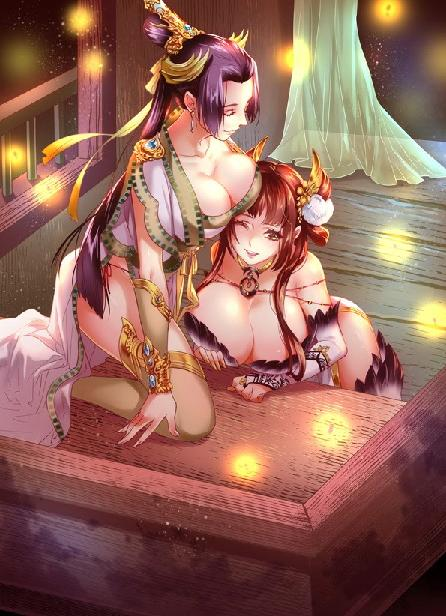

第69集·疑雾迷离
汉国篇（21/28）
出版日期：2017-04-28
【本集内容简介】
披香殿突然遇袭，除了云丹琉带着定陶王杀出重围外，赵飞燕一干女眷均被黑魔海绑走，再遇蔡敬仲的程宗扬得知此消息，发现自己输了剑玉姬一大截：对方左灭永安，右平长秋，手握二后，脚踩两宫，真是大获全胜了呢！
程宗扬眼看自己兵败如山，但在玄武门外又是另一番光景。苍鹭打着天子旗号，领三千军士与金蜜镝的南宫将士对垒，正在紧要关头，刘建派来的左翼士兵却突然退却……
※ ※ ※ ※ ※

封面人物：潘金莲、乐明珠（新版）
“王师所至，群奸束手。比至平朔殿，吕逆持火炬，据薪哀嚎。彼獠须发尽脱，头冠委地，状如疯魔……”
内侍公鸭般的嗓音在凉风殿内回荡：“须臾火起，烈焰高炽，势所难止……诸军发掘灰烬，得吕逆骸骨数枚，齿六，玉佩二，铜印、虎符、节杖各一……”
听着内侍的奏报，刘建从鼻孔中发出一声冷哼。
吕巨君走投无路，最后抱着符节印章，自焚而死，还一把火将整个平朔殿都付之一炬，可谓是丧心病狂！天命在朕，这些乱臣贼子逆天而行，活该他葬身火海，死无全尸。
“吕逆既亡，蹈火而死者百余。余者皆缴械投诚。拘于……拘于廊下。”那内侍声音越说越小，最后没了声音。
刘建横了他一眼，心头禁不住一阵烦躁。自从上一名内侍被人碎颅而死，这些内侍就像是吓破了胆，一个个畏手畏脚，面对自己招揽的几个客卿，连大气都不敢喘一口——这帮没用的废物！
刘建摆了摆手，“下去吧。”
那内侍如蒙大赦，趴下来磕了个头，倒退着出了凉风殿。
一名武将装扮的剽悍丈夫大步进来，他腰间的佩刀按规矩留在殿外，衣带上只剩下一个空挂钩。
“臣魏疾，拜见陛下！”
刘建容色稍霁。魏疾与那帮草莽之辈不同，他在江都国任中大夫，有官职在身，而且勇力过人，是自己最得力的亲信。自己招揽的门客壮士，都由他掌控。此前听到军中鼓声，刘建派内侍去询问，却被指为擅闯军机重地，当场击杀，不得不派魏疾前去善后。在刘建看来，那个苍鹭无非是略知兵法而已，为人骄横鄙陋，若是上阵杀敌，绝非魏疾的对手。只不过眼下正值用人之际，才不得不容忍一二。
“问了吗？”
“臣已问过。”魏疾气贯丹田，声震屋宇，“苍布衣称宫中叛军尽数归降，他已然将降卒编伍，伺机进兵长秋宫！”
“大善！”刘建抚掌说道。苍鹭等人主动出击，与金蜜镝拼个你死我活，实在是本天子之幸，最好他们两个能同归于尽，一个都别活。
刘建忧心尽去，笑道：“好好带你的兵！事平之后，朕即刻给你封侯！”
魏疾大喜过望，“谢陛下隆恩！”
魏疾谢恩退下，一名内侍过来，细声道：“启奏圣上。诏书已经拟好。”
刘建心情畅快，闻言精神更是一振，挺直腰背，一手摸了摸腰间。腰间的革囊内装着一枚沉甸甸的玉玺，份量十足。传国玉玺本该由专门的掌玺太监保管，但刘建怎么都放心不下，还是带在自己身上，贴身保管才觉得踏实。
内侍依次呈上诏书，不多时就铺了满地。前面三十余份是追究吕氏党羽的，各种枭首、腰斩、暴尸、具五刑，乃至于族诛、夷三族……按照罪行轻重，不一而足。每份诏书少则代表一条人命，多则牵连数十、上百口。一道轻飘飘的诏书，就意味着一个鼎盛的家族灰飞烟灭，这种口含天宪，手握权柄，生杀予夺尽在己心的滋味，让刘建心醉不已。
再往后，数十道诏书分别发往各诸侯封国，以及天下州郡，宣告新君顺天应命，承天子之位。这些诏书文字大抵相同，内容也了无新意，但刘建照样看得起劲，一字一句都不肯错过。
最后几份，是发往秦、唐、晋、宋以及昭南的国书。洛都的变故，自然瞒不过诸国的使臣。这份国书就是宣告汉国局势已定，圣天子已然继位，周边诸国不用再打什么主意，老实派使臣前来恭贺。
刘建逐一看过，神情愈发得意。等看完最后一道诏书，他忽然变了脸色，厉声道：“大赦之诏呢？”
内侍咽了口唾沫，小心道：“逆贼尚未……”
“荒唐！”刘建勃然大怒，“哪里有新君登基不大赦天下的！朕继嗣大统，德被四海，恩泽天下！天下万民都要感受到朕的恩德！至于那些逆贼，当然不在大赦之列！难道还要朕教你们吗！”
内侍以头抢地，“奴才遵旨！这就叫侍诏拟定大赦诏书！”
刘建展示了一番圣天子的雷霆之怒，看到他惊惶的样子，感到十分满意，于是收起怒色，用淡然的口气道：“去吧。”
等内侍离开，刘建绕着摊开的诏书走了一圈，这才立定脚步，吩咐道：“来人！奉玺！”
两名内侍走上前来，小心翼翼地解开革囊，躬身捧出玉玺。
“慢着些。当心……”
刘建不住指点，直到玉玺稳稳放在案上，才吁了口气。
自己苦心孤诣，如今终于大权在握，自然快意非常，然而无人分享，不免有所缺憾。刘建恋恋不舍地收回目光，开口道：“成妃呢？”
内侍回道：“娘娘去了北宫。”
刘建心头一动，想起那位曾经权倾天下，自己也不得不厚着脸皮百般巴结的吕太后。他眉头舒展，整张脸似乎都放出光来。
“传旨！备驾！朕——御驾亲临北宫！”
※ ※ ※ ※ ※
刘建准备亲临北宫的同时，一辆马车正从北宫驶出，奔往南宫玄武门。
“羽族多生活在南方森林深处，人迹难至的高山密林之间。直到武皇发兵远征，设置合浦、珠崖二郡，才与世人略有接触。羽族男女皆纤体轻身，女子轻扬婉举，尤有殊色……”
卢景光着膀子，伏在一张毡毯上。那名藏身于死士中的秃驴悍然自爆，同时崩碎了手中的长刀。卢景虽然避开要害，但背后还是被十余块碎片刺中，鲜血淋漓。此时义姁正一手拿着银刀，一手拿着银制的镊子，将嵌在他伤口中的碎片逐一挑出。
伤口血肉模糊的样子，程宗扬看着都揪心，卢景却十分淡定，一边任由尖长的银镊探进伤口，一边述说羽族的来历。
羽族与兽蛮人一样，也分为许多不同的族群。借助于与生俱来的飞翔能力，羽族将人类难以攀援的深山作为自己的家园，甚至飞入波涛汹涌的大海深处，寻找栖居地。南方连绵的群山成为天然的屏障，很长时间，羽族的存在都是一种传说，直到武皇开边，人们才第一次与羽族世代生活的家园接壤。
能够飞翔的羽族带给人们极大的震撼，同样令人震撼的，还有羽族女子的美貌。以美色著称的异族并不少，比如狐族女子，也是以美艳知名于世。但与性淫的狐女不同，羽族女子堪称坚贞的典范，一旦动情，便至死不渝。
很快，羽族女子的美貌和痴情就引发了贪婪者的勃勃野心。受到商会重金资助，以及官方私下纵容的捕奴队接踵而至，把羽族作为猎物，大肆捕捉。大量羽族村落被摧毁，族人被屠杀、掳掠。幸存者只能迁往更险僻的深山，连绵的群山成为天然的屏障，也使得曾经温和好客的羽族变得封闭而排外……
程宗扬耳朵听着，心神却早已飞往盘江之南，湿热而遍布瘴气的蛮荒深处，想起久无音讯的凝羽。想起她的美貌、坚贞、痴情，还有经历的不幸。自己从太泉古阵带来的水晶手链还在身边，不知道何时才能给凝羽亲手带上……
“堂堂汉国太后，居然有羽族血脉，这事够稀奇的。”卢景声音响起：“我猜吧，多半吕雉的生父极爱那名羽族女子，有意隐瞒下来，其他吕氏族人对此并不知情，因此才会在吕父死后，把吕雉送入宫中。”
程宗扬抛开思绪，皱眉道：“既然吕雉是羽族，那吕冀和吕不疑呢？他们是一母同胞，还是同父异母？”
“这个不好说。但你不用担心。”程宗扬一皱眉头，卢景就看出端倪，宽慰道：“羽族与异族所生育的混血儿，子则随父，女则随母。即便吕冀的亲妈是羽族，他也不会长出翅膀——就算他能长出翅膀，那胖子也飞不起来。”
想起吕冀的体形，程宗扬不禁失笑。想让那胖子飞上天，再加两对翅膀都不够。但紧接着他又皱起眉头。这次突袭永安宫，可谓是波折横生，最终的结果虽然差强人意，可程宗扬心下始终有些不踏实。
首先是吕雉的下落。按理说，有死丫头带着朱老头和曹季兴那两个满身白毛的老妖精，吕雉长出翅膀也白搭，再怎么也飞不出他们的手掌心。但吕雉一刻没有落网，这事儿就不算完。
然后是剑玉姬——这贱人虽然排在第二位，但她的举动比吕雉的下落更让自己不安。这贱人主动附和自己刺杀吕雉的提议，没安好心是肯定的。蹊跷之处在于，她在追杀吕雉方面似乎并不积极，而是热衷于玩弄一些不上台面的阴谋。吕雉失踪，她们立即鸠占鹊巢，对外制造出太后尚在宫中的假象，却对吕雉的去向不闻不问。假如吕雉落到自己手里，太后、皇后全在自己一方，帝位的正统彻底被自己控制，那贱人还怎么跟自己斗？
对于剑玉姬的反常举动，程宗扬百思不得其解。卢景想了一会儿，“你这么一说，我也有点奇怪。动手刺杀吕雉的有龙宸，有太平道，甚至还有晴州商会，真正属于黑魔海的却没有几个。”
程宗扬与小紫中途折返，并没有亲眼目睹寝宫内的情形。卢景旁观了整个经过，对此倒是门儿清。
程宗扬仔细问了一遍，眉头皱得愈发紧了。刺杀太后这么大的事，居然用了一帮拼凑的人马。难道是人手不足？剑玉姬在汉国经营多年，不至于只有那点人手。那么黑魔海的人都去哪儿了？
卢景咳了一声，却是义姁将银镊探入他背后最大的一处伤口，清理里面的异物。随着银镊的拨动，伤口迸出一股鲜血。
程宗扬赶紧道：“五哥，你先歇一会儿。”
卢景虽然谈笑自若，受的伤可一点都不轻。单单那秃驴的自爆，就导致他经脉受创，再加上迸飞的碎刀片，遍布背脊的伤口，程宗扬看着都觉得心悸，假如换成自己，只怕早就被打成筛子了。
“大孚灵鹫寺这帮贼秃，简直是丧心病狂！”
自己一没招他们二没惹他们，一帮贼秃偏偏跳出来添乱，想想都恨得慌。
卢景倒是看得开，“贼秃贼秃，不贼不秃，不秃不贼。”
程宗扬道：“我在洛都混了这么久，连一座佛寺都没见过，他们从哪儿冒出来的？”
“何止洛都，”卢景道：“整个汉国也没几座寺庙。”
“那他们还瞎折腾个什么劲儿呢？”
卢景龇牙一笑，“就是因为没有，他们才得玩命地折腾。”
程宗扬似乎明白了一些，“他们给吕氏卖命，是为了进入汉国？”
“难说。”卢景道：“汉国罢黜百家，独尊儒术。道门诸宗还好一些，多少有些信徒。佛门诸寺也下过不少工夫，可多年来一直无门可入，据说对汉国垂涎已久。如今能和吕氏牵上线，也不知道背后费了多少力气。”
程宗扬讶道：“什么声音？”
随着卢景说话，一个轻微的“嘶嘶”声时断时续，仿佛有人在车内窥视。
义姁用银镊探入卢景背后一处伤口，挟住里面破碎的刀片，轻轻一拔，“嘶嘶”声随之响起。
义姁冷着脸道：“伤口太深，刺破了肺叶。”
“干！”程宗扬大骂一声。他知道卢五哥伤势不轻，却没想到会伤及肺脏。
那块碎片射入太深，义姁试了几次都没能挟出，卢景不耐烦起来，双肩微微一张，背后肌肉绷紧，然后一弹，一枚寸许大小的碎片被肌肉硬生生挤出，带着污血跳了出来。
义姁为了求生，不得不低头，原本就心不甘情不愿，对程宗扬和卢景等人也没有什么好脸色。看到这一幕，不禁悚然动容，手里拿着银镊，僵在半空。直到碎片掉在毡毯上，她才如梦初醒，连忙夹起一团药棉，按住伤口。
卢景道：“我觉着吧，你八成是被骗了。”
程宗扬怔了一下，“啊？”
“你想啊，吕雉纠集的那帮人马，明摆着是用来对付殇侯的——她怎么知道殇侯会出现？”
“石敬瑭。他装作通风报信，引诱吕雉设下圈套。”
“没错。那石敬瑭是为谁通风报信的？”
“当然是朱老头……咦？”
程宗扬反应过来，如果石敬瑭接到殇侯的指令，向吕雉通风报信，那么朱老头的出现绝不是偶然。不管自己今晚会不会到北宫，老东西也必定会来。而吕雉一直在等的，也不是黑魔海或者长秋宫派来的刺客，正是朱老头。这也解释了为什么吕雉在紧要关头，派出自己最信任的心腹暗中把吕冀送走，显然面对凶名在外的鸩羽殇侯，她也没有十足的胜算，因此不愿让弟弟卷入可能的危险之中。
那朱老头为什么要入北宫呢？与吕雉了结当年的恩怨？老东西未必有那份闲心。毕竟当年的凶手早就死光光了，剩下几个不沾边的晚辈，朱老头真不一定放在眼里。自己倒是一开始就问过死丫头，她和朱老头入宫干嘛呢？结果被死丫头把话岔开了。
卢景说自己被骗了，其实是指死丫头没有说实话。她非要去追吕雉，很可能有事瞒着自己——这有什么好隐瞒的？她不愿意说就不说，有什么大不了的？
“骗了就骗了，只要她高兴，我乐意。”
卢景奇道：“你就不奇怪她为什么瞒你？”
“管那么多呢，反正死丫头又不会害我。”程宗扬同情地说道：“连女人的心思你都想弄明白，卢五哥，怪不得你没有女朋友呢。”
卢景翻了个白眼，“我是想着会不会跟岳帅有关。”
“哪儿那么多跟岳鸟……帅有关的呢？再说了，真要有关系，迟早也会跟你说明白。得了，你这肺都扎破了，还说这么多。”
车身忽然一顿，外面传来蹄铁在冰雪上打滑的磨擦声。正在给卢景缝合伤口的义姁手指一个不稳，险些将银针刺到伤口内。
在前面驾车的赵充国勒住马匹，压低声音道：“老五，老程，外边风头有点不对。”
程宗扬将车帘掀开一线，只见南宫的玄武门大门紧闭，原本驻守此地的隶徒踪影全无，门楼上空无一人。
一股危险的感觉爬上心头，程宗扬立刻道：“转道！去西邸！”
※ ※ ※ ※ ※
襄邑侯府与襄城君府临街相望，飞檐斗角，气势磅礴，然而此时，富丽堂皇的侯府内却弥漫着一股浓浓的血腥气。
天色未亮，来自南北二宫的五名新晋中常侍便领着千余隶徒，将两府团团围住。两名头戴貂蝉冠的中常侍分别取出诏书，宣读了天子谕旨和太后的懿旨，宣布革去吕冀大司马之职，改封襄邑侯为景都乡侯；取消孙寿的襄城君封号，责令其即刻入宫。
董宣一手扯着缰绳，神情冷峻。平朔殿大火刚一升起，他就接到长秋宫送来的密信，称太后深明大义，已经同意移居长信宫，但吕冀趁乱逃脱。霍大将军与金车骑担心吕冀继续作乱，更担心江都王太子刘建抓获吕冀，抢走平定吕氏之乱的功劳，因此命他立即带领所属隶徒，包围襄邑侯府，务必捉拿吕冀。
接到密信，董宣不禁心下狐疑，玄武门是通连南北二宫的门户，关系重大，命令自己带领部属去捉吕冀，怎么看都像是调虎离山的伎俩。正当他准备亲自面见皇后，弄清原委之际，却有数名中常侍接连叩关而出，与北宫来的内侍会合一处，董宣拦下询问，果不其然，都是往襄邑侯府去的。
董宣知道这一晚宫中使臣四出，大肆诛杀吕氏乱党，再耽误下去，只怕真如密信所言，连吕冀也落到刘建手中。一旦刘建以天子的名义诛杀吕冀，平定吕氏之乱，就彻底占据了大义的名分。董宣不敢再迟疑，只能一边派人往长秋宫求见皇后，一边紧追着几名中常侍，免得他们抢走功劳。
密信中特别提醒，吕冀在府内暗中豢养了数百死士，让董宣不能大意。董宣权衡之后，带了一半部属前往襄邑侯府，另外一半近千名隶徒暂时交给副手，严令他死守玄武门。董宣不知道的是，他前脚刚走，副手就接到金蜜镝和霍子孟联名签发的调令，命他赴平朔殿救火，同时看押投降的左武第二军。
众人抵达时，两府已经乱成一团。城中兵戈四起，男女主人却都不见踪影，加上各处吕氏府邸频频传来噩耗，有些奸猾之徒就起了歪心思，结果没等董宣等人登门，府中自己就先大杀了一通。
中常侍念完诏书，府中又是一阵混乱，但紧闭的大门始终没有开启。董宣皱起眉头，正要派人破门，却被一名中常侍拦住。
“董司隶稍安勿躁。”那名中常侍笑眯眯地说道：“咱家来时，圣上专门交待过，逆贼吕冀犯上作乱，罪在不赦，但到底是太后胞弟，群臣之首的大司马，多少要给他留几分体面，允其自尽。”
董宣虎目微微眯起，他是在故意拖延时间？
另一名中常侍察颜观色，开口说道：“这么耽误着也不是个事儿。不如先收系襄城君，押往宫中。”
“好主意。”又一名中常侍接口道：“孙氏倚仗吕逆的权势，作恶多端，天子早就吩咐过，犯妇孙寿务必要抓活的，好明正典刑，以儆效尤。”
“正是，正是。孙逆妖妆异服，伤风败俗，早就该杀了。”
几名太监你一言我一语，说得董宣心烦不已。他一声令下，属下的隶徒搬来撞木，片刻间便撞开大门。
“看来他们真是要来抓你呢。”卓云君立在楼上，望着潮水般涌入府中的隶徒说道。
孙寿脸色苍白，那些身穿皂衣的隶徒尚能保持克制，随行而来的一众门客家奴却是肆无忌惮。襄城君府中的家人奴仆全部被驱赶到户外，稍有不从，立即白刃相加。不多时，府中便哭声四起，夹杂着被杀者的惨叫和讨饶声，宛如末世。
卓云君穿着一袭杏黄色的道服，长发随意挽成一个道髻，此时凭栏而立，宛若临风仙子，不染凡尘。
惊理与胡情交手时受了些伤，正盘膝趺坐，运功疗伤。她旁边放着一只半人高的酒瓮，瓮口盖着一张黄纸。
吕冀靠在墙边，他手脚都被绳索捆住，嘴里塞着一团破布，扭曲的肥脸上满是惊惧和愤怒。
中行说趴在地板上，他背心被胡情拍过一掌，伤势极重，此时仍昏迷不醒。
楼内最后一人，却是洛帮的大当家何漪莲。
“卓教御。”她开口道：“秦夫人命我来此接应诸位。事不宜迟，还请尽早启程。”
卓云君退开一步，垂手道：“请姐姐吩咐。”
虽然不是第一次看到她如此姿态，何漪莲还是禁不住生出一丝荒唐感。堂堂太乙真宗教御，在自己面前却如同小婢，执礼恭谨。若是传扬出去，不知道会惊掉多少人的下巴。
惊理忽然睁开眼睛，“来了！”
在重兵包围之下，一直没有动静的襄邑侯府突然传来一阵骚动，接着紧闭的大门猛然洞开，几辆马车疾驰出来。
那些马车厢板都包着厚厚的犀皮，连车前的驭马都披着重甲，坚固程度更甚于武刚车。几名死士攀在车外，有的弯弓劲射，有的挥舞长戈，将拦路的隶徒和家奴挑开。
那些四马拖动的重车奔驰时声势惊人，在长街上横冲直撞，无人能挡。最后董宣亲自出手，挥刀斫碎包铁的车轮，才留下两辆，但还是有一辆硬生生闯过屏障，往上津门驰去。
两辆大车上载的都是珠宝和吕冀的姬妾，十余名死士被隶徒团团围住，血战不退，最终尽数战死，隶徒也死伤数十人，更倒霉的是几名中常侍离大门太近，马车冲出时躲闪不及，当场就死了三个，另外两人也被马蹄践踏，多处骨折。
看着自己的姬妾死伤狼藉，几名幸存的红粉娇娃被人戴上枷锁，哭哭啼啼在雪地上跪成一排，吕冀先是额头青筋暴跳，然后脸色由红转青，最后无力地靠在墙壁上，面如死灰。
卓云君盯着最后那辆大车逃逸的方向，然后足尖一点，踏上栏杆，宛如御风而行般追了过去。
※ ※ ※ ※ ※
“乡野草民，拜见车骑将军。”
苍鹭躬身俯首，郑重其事地向金蜜镝大礼参拜。
金蜜镝双手抚膝，神情不怒自威。在他身后，长秋宫所有卫士倾巢而出，在宫门前严阵以待。吕巨君自焚不久，他就接到密报，称刘建招降了所有叛军，准备进攻长秋宫。刘建一方本来就人数众多，加上降卒，更是如虎添翼，任谁也不敢掉以轻心。
苍鹭果然来了，却没有料想中的大军，而是带了寥寥几名护卫，仿佛毫无戒备一样过来拜见，举止恭敬，不失礼数。
金蜜镝沉声道：“足下此来，所为何事？”
苍鹭站起身，“太后懿旨，召金车骑赴永安宫，草民奉令，送将军上路。”
霍去病闻言大怒，这厮貌似恭敬，话里话外却是恶意满满，真当金蜜镝这些重臣是好惹的？
“你算老几！”霍去病呵斥道：“滚开！”
金蜜镝抬手止住他，“待霍大将军入宫，我等一道拜见太后。”
后面的吴三桂和刘诏等人暗暗松了口气，金蜜镝是忠臣，但一点都不傻，眼下永安宫的情形无人知晓，不过用脚后跟想想也知道不是善地。连吕太后都已经认输，不得不抛出吕冀抵罪，其间的险恶可想而知。
没能把金蜜镝诓去北宫，苍鹭脸上没有丝毫异状，不动声色地说道：“幸赖将军指挥，宫中叛乱已然平定。自卫尉吕淑以下，吕忠、吕让、吕戟诸逆皆已授首，射声校尉吕贼巨君自焚而死，从逆之辈尽皆缴械降服。金车骑是军中宿将，这些降卒都出自军中，草民不敢擅专，还请将军处置。”
※ ※ ※ ※ ※
投降的乱军在刘建军的押解下，分成两列，鱼贯而入。这些残兵败卒一个个垂头丧气，心怀忐忑，神情间难掩仓惶。
投降的吕氏乱军有一千六百余人，包括射声军和卫尉军的残兵，以及左武第二军一千余人，其中一半都带着伤。
也不知道是刘建军获胜之后过于轻率，还是看管者对这些失去首脑的俘虏太过放心，这一千余名俘虏只是缴械，锁链脚镣一概皆无，连手都没有捆，就那么空着手被押解到长秋宫前。
霍去病对自己的胆量颇为自负，可陡然见到一千多壮汉拥过来，也不由地挺直身体，一手下意识地按住佩剑，直到看清他们手无寸铁，才暗暗松了口气。
他并不怕刘建翻脸。玄武、白虎两门都在自己一方手中，刘建敢动手，正好给了自己反击的口实。刘建击败吕氏，看似风光无限，其实毫无根基，就以他所倚仗的大军而言，只要自家兄长一出面，保证一半人会当场倒戈。
要不要先发制人呢？霍去病手指轻叩着瑶光剑，心下默默盘算。
金蜜镝一手握拳，在膝上摩挲了片刻。谋逆属于第一等的大罪，这些军士作为从犯，按例应当一律斩首。可他久历军伍，知道这些军士哪里有什么谋逆的心思？无非是身为军卒，听从主将的吩咐，奉命行事而已。如今胜负已分，作乱的首恶葬身火海，这些军士随即缴械，毫无反叛之意，就像现在，明知前路未卜，也绝无异动。
金蜜镝目光从一众降卒脸上扫过，不由握起拳头，按在唇上低低咳嗽几声。这些都是汉军精锐，堂堂大好男儿，就这么白白处死，于心何忍？
苍鹭也不催促，只神色从容地立在一旁，显示出过人的耐心。
足足用了半个时辰，被俘的军士才被尽数带到，在长秋宫前整齐排成一个方阵。接着几名将领被五花大绑地押了进来。经过连日来的厮杀，乱军中的将领几乎死伤殆尽，剩余的自知难逃一死，大都在吕巨君自焚时选择同归于尽。此时幸存下来的多是些普通士卒，军官寥寥无几。
最前面是一名头戴金冠的英俊少年，被军士押上来时，他还有些不服气，让人在膝弯踹了一脚才跪下来，嘴里还在抱怨：“绑得太紧了！”
“小将军虎狼之姿，”苍鹭两眼望着空处，口中轻飘飘说道：“缚虎安得不紧？”
吕奉先对他一百二十个不服，昂着脖子叫道：“要不是你使诈，你根本打不过我！”
苍鹭望着天际低垂的彤云道：“小将军年纪轻轻便勇冠三军，一柄方天画戟所向无敌，堪称天下无双，自然不把我等这般庸人放在眼里……”他回头瞟了霍去病一眼，“只可惜有勇无谋。”
“好了，好了，我投降了。”吕奉先叫道：“先把我解开！”
被押解来的降卒太多，吴三桂与刘诏等人也赶来压阵，听到这话不由面面相觑。这小家伙的身手他们也领教过，说句天纵其才也不为过，可这脑子咋长的？他以为这是什么？过家家呢？
霍去病忍不住笑了起来。
吕奉先恼道：“你笑个屁啊！”
“好好好，我不笑了。”霍少病扬声道：“来人啊，给吕少爷解开。”
吴三桂跨前一步，“霍少，这不合适吧？”
中常侍唐衡也低声提醒道：“少将军，缚虎容易纵虎难。”
“你们不是吧？”霍去病奇道：“难道还真把吕家斩尽杀绝？”
苍鹭道：“少将军以为呢？”
“滚！哪里有你说话的份！”
霍去病一声虎吼，斥退那个不长眼的草民，随即收起怒色，向金蜜镝拱手说道：“金车骑，吕冀等逆贼虽然作乱，但吕氏传承数百年，忠臣贤士累世不绝，岂能一概杀之？何况吕氏世称后族，牵连极广，单是吕奉先这小子，他姐姐是代王妃，姑母是燕王后，姑祖母是河间王太后，嫡祖母是阳阿公主……”
霍去病说着有意停顿了一下，外人可能不了解，但金蜜镝想必知道这位阳阿公主——传闻长秋宫那位皇后就出自阳阿公主门下！霍去病还知道，这传闻不但是真的，而且长秋宫那位皇后对阳阿公主颇为感激，每逢年节寿诞均有致礼。想杀吕奉先？你先问问皇后答不答应！
方才那刁民语带挑拨，还想挑起自己对吕奉先的嫉妒，他懂个屁！自己的霍家同样与阳阿公主关系极深，自己与吕奉先光屁股的时候就在一起玩耍，打小没少欺负他。要不是自己被兄长一脚踢去了皇图天策府，吕奉先这小子现在还在自己屁股后面当小尾巴呢。
大汉立国以来，帝室与吕氏就累世联姻，彼此的关系盘根错节，别说外人，就是刘氏与吕氏自家，不查玉牒宗谱也理不清楚。数百年下来，各种亲上加亲，两家血缘早已经千丝万缕地交织在一起，可以说打断骨头连着筋。像吕奉先这种的，本身与一堆诸侯结亲，又是阳阿公主嫡孙，长秋宫看在阳阿公主的面子上，怎么也得留他一条性命。而太后吕雉因为赵飞燕的缘故，对阳阿公主私下多有不满，但吕奉先又姓吕，正经的吕氏族人，极得吕雉喜爱。跟自己呢，又是光屁股玩到大的交情。
相比之下，刘建一个远支宗室，别看他是江都王太子，姓的是刘，可比起吕奉先来，两人在刘、吕、赵、霍诸家眼里，真不一定谁亲谁疏。
金蜜镝开口道：“吕奉先，你为何谋逆？”
“我才没有谋逆！”吕奉先梗着脖子道：“是刘建谋逆！我奉命平叛！”
霍去病放声大笑，“这事儿闹的……哈哈……怎么说呢？”
随行的一名内侍指着吕奉先的鼻子，厉声喝道：“放肆！”
“你也滚！”霍去病一脚把他踹翻。
那内侍趴在地上，气得直哆嗦，“你！你！你要造反吗？”
霍去病握住剑柄，然后一道寒光从鞘中脱出，只轻轻一挥，就将那内侍的脑袋斩了下来。
场中万籁俱寂。众目睽睽之下，“天子”派来的内侍横尸当场，霍去病提剑微微一甩，几滴血珠从如水的剑锋上滑落，然后若无其事地收入鞘中。
一行鲜血溅在苍鹭衣角上，他仿佛没看到同伴身首异处，神情丝毫不变，只盯着那柄瑶光剑，眼也不眨地说道：“既然说了由金车骑处置，是杀是放，将军一言可决。”
霍去病道：“你不用拿话来套我们。他们的生死你作不了主，金车骑也作不了主，如今能作主的只有一位：长秋宫，赵皇后！”
徐璜一直没有开口，这会儿才隐约品出点滋味。霍去病力保吕奉先，一方面是两人的交情，另一方面则是溯本正源——站在皇后的立场上，攻打长秋宫是谋逆，可攻打刘建算什么谋逆？要不是眼下大伙儿暂时还没有撕破脸，霍去病就差明着说刘建也是谋逆的乱党了。
徐璜心头一阵激动，程大行去了北宫，一直没有传回消息，好不容易得知永安宫大局已定，传诏的却跑到刘建军中——显然在北宫的争夺中，刘建一方占了上风。
刘建接连拿到玉玺、虎符，又抢先控制住永安宫的太后，眼看着这个野心勃勃的宗室大功告成，风头一时无两，徐璜几乎都已经绝望了，可没想到一直没有明白表态的霍少会突然站出来，当众跟刘建顶上。
短短一会儿工夫，徐璜忽惊忽喜，心情大起大落，忽而跌入谷底，忽而绝处逢生，真有种头晕眼花的感觉。直到此时，他才捋清霍去病态度转变的关键：太后吕雉！
霍子孟虽然在程大行的劝说下，遣羽林天军入宫，但态度一直模棱两可。直到确定太后失势，霍去病才毫不犹豫地亮明态度：站在长秋宫一方，跟刘建对着干！霍氏可以接受长秋宫，甚至可以接受吕氏，但绝不能是刘建！
霍子孟深受太后信重，天子秉政之后，吕冀虽然跳出来与他争权，但太后吕雉余恩尚在，霍子孟纵然偏向长秋宫和定陶王，也不愿与太后针锋相对。如今吕氏失势，霍子孟也不需要再顾忌什么。
想明白这一层关节，徐璜顿时有了底气。刘建此时看似风光，实际上只是一个泡影，霍子孟与金蜜镝一旦联手，朝中大臣几乎都会站在他们一边。刘建倚仗的一帮家奴，在这些朝廷重臣面前，只是笑话！
徐璜顾不得自己的伤势，起身喝道：“刘建竖子，岂能为君！”
霍去病赞赏地看了他一眼。这班阉竖虽然能力不咋样，眼力劲儿没得说。特别擅长察颜观色，见风使舵。
苍鹭对他的呵斥安之若素，倒是他身后几名护卫目露凶光。
身后脚步声响，徐璜扭头看时，却发现是原本驻守白虎门的羽林天军。为首一名羽林郎抱拳禀道：“末将奉金车骑军令，移防长秋宫！”
霍去病陡然变了脸色，盯着苍鹭道：“你这刁民！竟敢使诈！”
一直面无表情的苍鹭唇角微微挑起，苍白的面孔就像解冻的湖面荡起涟漪，露出一丝微不可见的笑意。
“兵者，诡道也。”苍鹭安静地说道：“利而诱之，乱而取之，怒而挠之，卑而骄之，攻其无备，出其不意。是谓兵不厌诈……”
霍去病拔剑往苍鹭斩去。苍鹭身后一名护卫抢上前来，拔刀格挡，另外一人扯起苍鹭，往后疾退。
苍鹭长吸一口气，然后露出一脸惊容，失声叫道：“金车骑！你居然要把这些降卒杀光！当真是胡人余孽！豺狼成性！兄弟们！要想保命的，快跟我走！”
场中的降卒本就惊惧不已，闻言立刻骚动起来。
吴三桂、刘诏、唐衡、徐璜等人齐齐变了脸色。长秋宫的守卫全加起来也不过四百来人，单是在场的降卒就有守卫的四倍，一旦大乱，必成大祸。
霍去病勃然大怒，反手绰起一根长矛，振臂一掷，直取苍鹭心口。
苍鹭身边那名护卫大吼着挥出一拳，硬生生将坚木制成的长矛砸成一团纷飞的木屑。
吴三桂飞身上前，试图截住苍鹭，却被苍鹭身边的佣兵团用劲弩逼开。
混乱中，金蜜镝声音响起：“老夫金蜜镝！听我号令：伏地者免死。”
金蜜镝声音并不高，但雄浑有力，沉稳异常，场中每个人都听得清清楚楚，短短几个字立收奇效，降卒的骚动停滞下来，不少军士依言伏在地上。
然而一波未平一波又起，就在这时，场中血光乍现，混在降卒队伍中的刘建门客拔出暗藏的兵刃，在人群间大肆砍杀。
长秋宫前原本就诸军混杂，除了期门武士、宫中执戟、剑戟士、两厢骑士，还有投诚的卫尉军，以及长水、中垒、步兵、虎贲等投奔来的北军士卒。此时又加上刚刚移调过来的羽林天军和押解来的降卒，局势更是混乱不堪。
混乱中，几名降卒一边大叫“将军救命！”一边朝金蜜镝奔来，甫一接近，就露出狰狞之色，悍然行凶，试图刺杀金蜜镝。
羽林天军刚刚赶来，见状只当降卒作乱，纷纷拔出长刀，准备加入战局。
两个声音同时响起：“不得妄动！”
“羽林军！退后！”
霍去病叫道：“听金车骑的！”
金蜜镝喝道：“退后五步！”
刘诏和王孟手起刀落，将几名伪装成降卒的亡命徒格杀当场。他们跟这些人全都不熟，索性就认准金蜜镝，敢上来动手的，来一个杀一个，来两个杀一双。其余在场的冯子都和王子方伤势未愈，唐衡、徐璜不擅争斗，此时已经被送进宫门之内，免得殃及池鱼。
金蜜镝与霍少病先后下令，羽林天军依言退开五步，然后按照吩咐，齐声呼道：“伏地免死！”
“伏地免死！”
越来越多的降卒伏在地上，双手抱在脑后。
假如换一个人，眼下的混乱很可能演变成一场屠杀，将长秋宫护卫、羽林天军和降卒全都卷入血海。幸好坐镇长秋宫的是金蜜镝，靠着他过人的威望，混乱迅速平息下来。但就这么一会儿工夫，苍鹭不仅已经扬长而去，还把一个天大的烂摊子丢给长秋宫。
稳住形势之后，金蜜镝立即派人打探消息。随着传回的情报越来越多，局势也越发险恶——白虎门与玄武门几乎同一时间落入早有预谋的刘建军手中，眼下整个南宫四门紧闭，金蜜镝等人被困长秋宫，内外联络断绝。驻守玄武门的一千余名隶徒同样中计，被伪造的军令调往烧成一片白地的平朔殿，情况比长秋宫还危险。
弄清真相，霍去病像是被人猛掴了一掌，一张冷脸气得通红。与吕奉先那个有勇无谋的家伙不同，他可是皇图天策府出来的，一向以智勇双全自负，没想到却在一个微末如草芥的刁民手中栽了大跟头。那刁民各种阴谋诡计，无所不用其极，先是伪造军令，将两处守军调走，接着借口移交降卒，亲自出马弄出一千多人的大阵仗，把众人的注意力都吸引过来，然后又在降卒中暗藏刺客，找到机会就暴起发难。
这连环计一环套一环，一计更比一计歹毒。尤其是移交降卒，不但掩护了白虎门和玄武门的异动，还把一个大到能压死人的包袱砸了过来。近两千名降卒，杀不能杀，用不敢用，留下来不但要从本就不多的军士中再分出人手看押，还得费心安置，长秋宫又不是粮仓，单是这一两千张嘴，就是一个大麻烦。闭门不纳更不可能，无论这些降卒失去控制在宫中乱闯，还是索性投到刘建一方，后果都不堪设想。
霍去病从头到尾琢磨一番，险些气歪了鼻子。他本来就打定主意翻脸，才保下吕奉先，当时还觉得是出其不意，狠狠给了刘建一记耳光，谁知人家的耳光打得比自己更早更狠更响。自己空负智计，不料却处处落后一步，等于被人牵着鼻子打转。
霍去病从来没把刘建当成盟友，翻脸也没有负担。可没想到刘建那厮翻脸更快，梳理一下时间就会发现，几乎在确定太后落败的同一刻，刘建一方已经开始动手，中间没有丝毫耽误。单是这份行动力，就令人惊心。
想到此处，霍去病反而怒气渐消，神情变得郑重起来。假如异地而处，自己会不会这么果断？即使自己够狠，外敌一去，就毫不迟疑地与盟友翻脸，那么自己能不能第一时间就布置好一切，并且准确地实施下去？更进一步，自己敢不敢以身犯险，亲自出面使用诈术，只为了把这个局作得更精细？
霍去病扪心自问，除了最后一点，相信自己不缺乏足够勇气之外，剩下的都不乐观。
“不要想太多。”
金蜜镝什么大风大浪没见过？苍鹭这点手段还不至于让他乱了方寸，此时见霍去病脸上时青时白，开口说道：“诈术只是不得已而为之。李药师想必给你说过，行险取巧只能偶一为之，乐此不疲，必受其弊。”
霍去病想了一会儿，然后叹道：“可能我天性就喜欢冒险吧。相比于堂皇之阵，险中求胜更合我的胃口。”
说话间，吕奉先提一颗首级过来，笑道：“哈哈，我刚杀了一个刺客！斩首一级！”
那小子没心没肺的模样，霍去病看着都觉得服气，“这会儿还能笑得出来？你心还真大啊！”
吕奉先茫然道：“怎么了？”
吕家的天都塌了，你居然屁的感觉都没有？
霍去病拍了拍吕奉先的肩膀，“算了，没事。你高兴就好。”
吕奉先倒是听劝，马上又高兴起来，他像蹴踘一样，抬脚把那颗人头踢飞，然后挥手叫道：“踢过来！踢过来！”
霍去病与金蜜镝大眼瞪小眼，半晌霍去病才咳了一声，“这小子……很天真烂漫嘛。哈哈……”
话音未落，一名大貂珰从宫中狂奔而出。
唐衡脸色又青又白，像是受了极大惊吓一样。他竭力保持镇定，但走到金蜜镝面前还是仍不禁双腿一软，瘫坐在地。
与此同时，一阵鼓声震破天地。
※ ※ ※ ※ ※
赵充国屈臂一扯，奋力拨转马首，往西邸驶去。但这会儿大雪刚停，孤零零一辆马车驶到宫前，想不引人注目都难。玄武门侧方的小门很快开启，一支近百骑的骑兵狂奔出来，铁蹄溅开冰雪。
程宗扬顾不得去想玄武门怎么会落到刘建手里，只想着先把眼前这一关过了再说。对方显然知道这辆马车的来路，否则单纯前来试探，出动十余骑已经算多的了。一下放出上百精骑，明显是要把自己留在这里。
卢五哥重伤在身，义姁靠不住，赵充国还得驾车，能打的只有自己一个，还有一只手不能用。程宗扬有点后悔，自己光想着剪除了吕雉的势力，又急着送卢五哥回去疗伤，一时大意，没有等收拾善后的秦桧、单超和石敬瑭一起走，结果这会儿连个帮手都没有。
追兵越来越近，最前面的骑手已经弯起角弓，朝马车放箭。
光挨打不还手，肯定是死路一条，可车上无弓无矢，想还手都没办法。
程宗扬在车内看了一圈，最后一把抢过义姁的药箱，在她愤怒的目光下，一通乱扒。
药箱内除了一堆药瓶，只有几柄银刀，两套长短不一的银针。程宗扬拿着这点东西，真是哭笑不得。那银刀就跟柳叶一样，又薄又轻，自己扔出去，估计连个响都听不见。银针更是轻得如同鸿毛一样，毫不顶用。
箭矢破空声越来越响，蹄声越来越近，幸好为了给卢景遮挡风雪，自己选了一辆带厢板的四轮大车，若是那种带伞盖的轻车，自己早就成了箭垛。
程宗扬左手骨折，只能单手拔刀，贴着前面的车顶，用力斩开。
寒风立刻沿着缝隙涌进车内，将车顶板掀得更开，程宗扬左右连劈，将车顶整个砍下。他最后一刀劈在车厢上方的连接处，接着一挑，车顶板翻滚着从车顶掉落，险些撞到后方的追兵。
可惜那些骑兵没有一个菜鸟，不但骑术精湛，反应也是一等一的灵敏，早早就策马闪避，连一根毫毛都没碰到。
程宗扬一不做二不休，将厢板逐一卸下，全部踢到车后。不多时，整个车厢就只剩下最后面一块。程宗扬还指望它来挡箭，没有动刀，不过它的兄弟亲朋都已经不辞而别，剩下孤板一块，摇摇欲坠，不用砍也撑不了多久。
卢景抱着衣裳惊呼道：“你是要冻死我啊！”
“我也是没辙了，忍着点吧，五哥。”
离西邸尚远，骑兵已经越追越近，眼看是跑不了了。卢景往四周扫了两眼，忽然神情微动，“西边那个夹道！进去！”
“得勒！”赵充国应了一声，往着夹道的方向驱车狂奔。
卢景扭过脸，“你怎么不逃呢？”
义姁咬牙道：“你把我穴道解开！”
卢景道：“你瞧我腾得出手吗？”
义姁脸色雪白，她修为被制，这会儿跳下车，被追兵围上就是个死字。这瞎子到这时候还说风凉话，怎么就不冻死他呢？
赵充国叫道：“坐稳了！”
程宗扬和卢景齐声叫道：“这坐得稳吗？”
马车猛然一颠，包铁的车轮碾开冰雪，在石阶上磕出一串火星，车身七扭八扭地冲进夹道。亏得三人练过，才没有被颠下来，可最后面那块厢板到底没能稳住，被颠得从车上脱落，一路翻滚着撞到一棵老榆树上。
后面马蹄疾响，骑兵紧追着冲进夹道。这会儿整辆大车只剩下底板，卢景五指如钩，扣住车底，义姁无处借力，只能半跪在地上，双手抱住他的小腿。程宗扬横刀而立，防备追兵的冷箭。
夹道只能容两骑并行，而且弯曲异常，三五步就是一个转弯，要不是赵充国御车的手段够高明，马车又颠得只剩个底板，恐怕还进不来。
骑兵紧追不舍，刚转过弯，看到前面兀自狂奔的马车，最前面两名骑手各自弯弓，瞄向车上诸人。
就在这时，头顶传来一声忽哨。几条人影从天而降，他们一边发出怪叫，一边抬脚将两名骑手踹下马去。
口哨声、怪叫声此起彼落，一帮少年纷纷现身，他们扯着绳索，猿猴般从树梢荡下，有些直接拿脚踹人，有些腾出一只手挥舞绳套，一把套住骑手的脖颈，接着又高高荡起。
夹道弯曲狭窄，擅长野战的骑兵在里面根本施展不出惯用的战术。为了便于马上骑射，骑兵用的都是形制较小的角弓，但在弯曲的夹道内全无用武之地。而这种夹道对那些市井少年而言，就和他们自己家里一样，别提多熟了。他们在墙头拉开弹弓，无数弹丸雨点般落下。飞来的弹丸各式各样，有晒干的泥丸，雕琢过的石丸，沉重的铁丸，甚至还有奢侈的金丸。
冲进夹道的骑兵不过三分之一，霎时间就被那些少年借助地势分成几段，首尾不能相望，外面只听到夹道内呼喝声、怪叫声连番响起。
程宗扬也是大开眼界。这些少年若是上阵，只怕这些骑兵一波就能扫平，但在这市井之地，却是大显身手。打闷棍、撂黑砖、下绊子的手艺各种精熟，这边把人打翻，那边就有人张开麻袋，往头上一套，也不知道是怎么练出来的。
片刻工夫，巷内的响动便沉寂下来，地上只剩下三十来匹空马和三十多个麻袋。几个游侠儿拿着大棒子，看哪个麻袋还在动，就照头一棒。
卢景披了件单衣，大马金刀坐在已经快散架的车上，一手放在身前，摆了个道上人亮明身份的手势。
为首的游侠儿十分客气，抱拳叫道：“卢五爷！久仰大名！”
卢景点了点头，“身手不错。活儿也干得利落。”
那游侠儿闻言大喜，被道上赫赫有名的卢家五爷一赞，脸上可是大有光彩。
“老郭呢？”
“郭大侠在里面，五爷请！”
※ ※ ※ ※ ※
赵充国跳下马车，凑到一名少年身边，可着劲儿地套磁，“兄弟这身手，够牛的啊！”
少年拱手道：“见笑。”
“我嘴笨，不大会说话，”赵充国一脸憨厚地说道：“要是说错了话，兄弟可多包涵。”
“见外了。”
“那我可说了啊？”
少年仗义地说道：“尽管说！”
“老哥我掏心窝子说句不该说的话，兄弟你千万别生气。”赵充国语重心长地说道：“待在这地方……白瞎了你这人材啊。”
那少年听着不乐意，“我们洛都游侠儿，不待在这里还怎么着？上天吗？”
“从军啊！”赵充国眉飞色舞地说道：“跟你说，我那儿可就缺你这号能上天、能入地的人才！”
程宗扬把赵充国一把推开，打着哈哈道：“别听他扯淡。那啥，外面还有不少追兵呢。”
少年没把赵充国的招揽当回事，闻言拍着胸脯道：“你们放心！这里可是我们的地盘！”
“难怪呢，我说你们准备得这么充分哈。”
“那是！接到郭大侠的号令，周围几个里坊的兄弟都聚了过来！足有三百多口刀，一百多把弹弓！连马都有二十多匹！”
少年一脸骄傲，为郭大侠效力，是每个汉国游侠儿的荣耀。
郭解已经接到消息，在门外等候。他穿着一袭半旧的布衣，身后立着数名汉子，都是和王孟一样，追随他多年的手足。虽然郭解身材远称不上魁梧，但见到这位名震天下的布衣大侠，程宗扬心里的大石终于落地，总算踏实下来。
“老郭。”卢景远远便说道：“杀死郑子卿那两个家伙已经找到了。”
郭解脚下一沉，足底的青石无声无息地龟纹开来。这两人是导致他家人被诛的罪魁祸首，连日来遍寻不得，还以为早被人灭口。
“一个杨七，一个伊震，都是襄邑侯府的死士。”
“吕冀指使的？”
“吕巨君。”
看着卢景披着单衣，就像散步一样，随随便便走过来，郭解忽然皱起眉头，抬手扣住卢景的脉门。
卢景毫不在意，任由他真气透脉而入，在自己经络内游走。
郭解眉头越拧越紧，良久才松开手，“十方丛林？”
“没错。”卢景道：“就是那帮秃驴。”
“我来给你疗伤。”
“行啊。”卢景毫不推辞。
卢景背上的外伤已经被义姁处理过，最深的几处伤口用过伤药，拿丝线缝合整齐，看上去总算没有那么狰狞，但他受创最重的，还是经脉的内伤。
这会儿郭解亲自出手，帮卢景打通受创的经脉，众人不敢打扰，都在外面守着。义姁屈膝跪坐在门边，冷着脸不言不笑，只一手拿着火钳，拨着火盆中的木炭。赵充国蹲在门口，跟那些游侠儿大肆吹嘘军中的待遇，声称只要有军功，一年成家，三年立业，五年十年封个侯啥的也不是梦，轻轻松松就走上人生巅峰。
程宗扬却坐立不安，急切地想知道宫中出了什么变故。
自己躲过追杀的消息已经通过郭解的渠道散布出去，不到半个时辰，一名腿部略有残疾的汉子匆匆赶来，却是星月湖大营退役的老兵郑宾。他带来了一个程宗扬最不愿意听到的消息：“黎明前，枯井突然溢水，通往长秋宫的暗道被淹，无法通行。”
“什么！”程宗扬几乎不敢相信自己的耳朵。暗道被淹，意味着外界与长秋宫的联络彻底断绝，赵飞燕、赵合德，还有自己的云大妞，全都被困在宫中。
“怎么会溢水？”程宗扬气急败坏地说道：“老班不是说过，洛都的地下水都被汲空了吗？”
郑宾挠挠头，对这个很有点高深的问题无言以对。
“宫里有消息吗？”
“有！”郑宾道：“蔡公子刚从宫里出来。”
“蔡公子？”程宗扬一脸懵懂，“哪个蔡公子？”
说着他心里“咯噔”一声，不会吧？
郑宾往旁边一让，露出身后一个人影。
廖扶葬身火中，大雪随即停歇，但漫天的乌云仍没有散开，光线一直阴沉沉的。可这人一出现，光鲜闪亮的色彩几乎亮花人眼。程宗扬定睛一看，只见那人头戴一顶束发的金冠，冠上嵌着一颗龙眼大的珍珠，身上穿着一件百蝶穿花的粉色织锦长袍，腰间束着一条五彩结穗的锦带。下面打着一串缨络，挂了七八块镶金嵌银的玉佩，外面是一件群芳争艳的绛紫色缎面披风，鼻上戴着一副茶色水晶的墨镜，手里摇着一柄大红洒金折扇……打扮得那叫一个风流骚气。
程宗扬目瞪口呆，看着那人像个移动的骚包一样，一步三摇地踱着步子踏进院内，只觉一股风骚之气扑面而来。
那人“唰”的一声收起折扇，一边在掌心拍着，一边晃着腿，一边扬着下巴道：“你，瞅啥呢？”
程宗扬咽了口唾沫，“……老蔡？”
蔡敬仲“啪”的一声抖开折扇，手法娴熟，还花哨地打了个旋儿，一手在身前摇着，一边冷冷道：“怎么着？本公子不能换件衣服？”
程宗扬几乎被他折扇上的金粉闪瞎狗眼，“不是不行。只是你这打扮……”
蔡敬仲戴着茶色墨镜，看不清他的眼神，但程宗扬的感觉就是像被一把鱼刺扎在喉咙里，想吐又吐不出来，卡得难受。
“换件衣服，换换心情嘛。”蔡敬仲道：“在宫里穿惯了乌衣，虽然黑色是百搭色，可老穿也腻得慌。在外面随便穿穿，款式啥的就不讲究了，只要留意色彩搭配就成。如今京里风行的大红我镇不住，瞧来瞧去，还是这色儿配我。至于大红，拿个扇子点缀一下就好。”
哎妈，你还讲究流行色呢？可这色儿它也不配你啊！墨镜自己倒是不陌生，月霜也戴过。可这粉色锦袍到底是什么鬼地方找的？程宗扬觉得自己活这么大，终于算是开眼了，天底下居然还有这么畸形的审美……去哪儿说理呢？
蔡敬仲低头看了看，“有什么不妥当的吗？”
“没有！”程宗扬斩钉截铁地说道：“特别时尚！”
蔡敬仲推了推墨镜，然后矜持地拂了拂衣角，微微昂起头。
程宗扬死命忍着才没告诉这位爷，单是衣服骚气点倒也罢了，可怕的是蔡爷穿得这么浪，表情还是一副死人脸，外面花团锦簇，里面死气沉沉，活像一具裹在寿衣里的僵尸。
他偏过脸，不敢再看。就蔡爷这打扮，多看一眼都得折寿。
“那个……我听说你被烧到了？伤得重不重？”
“一点皮外伤。烧到手背而已。”
蔡敬仲说着，专门伸出手，跟程宗扬比了比。好嘛，两人都伤的左手，不过程宗扬手上只随便绑了条绷带，蔡爷手上包的可是一条靛青色的鲛帕，正经的宫中贡物。
身后忽然传来一声难以置信的惊呼：“蔡……蔡……蔡常侍？”
程宗扬很理解义姁为什么半晌才认出他来，蔡爷打扮成这等模样，确实不好认。
蔡敬仲不动声色，“你认错了。蔡常侍早就烧死了。”
“你烧成灰我都认得！”义姁神情激动起来，“怪不得太后会中计！原来是你这个叛贼！”
“什么太后？”蔡敬仲拿折扇指着她，义正辞严地说道：“本公子从来都没听说过。”
义姁尖声道：“你还抵赖！枉自太后那么信任你！”
赵充国也像是大吃了一斤的狗屎，好不容易才缓过劲来，“蔡公公……”
蔡敬仲呵斥道：“什么蔡公公！是蔡公子！”
“是！是！”赵充国赶紧服软，“蔡公子，我就问问那钱……”
“没听说过。”蔡敬仲板着脸道：“什么钱？”
“我借给蔡常侍那钱——可是许过四分利的啊！”
“你们都不知道？”蔡敬仲一脸愕然地说道：“蔡常侍烧死了。”
“我知道啊。我就在下面看着呢。”
“那不就结了。”蔡敬仲叹息道：“欠条也烧了，死无对证啊。”
“别啊！”赵充国赶紧往怀里掏，“欠条一边一份，我这儿还有一份呢！”
赵充国一边挥舞着欠条，一边过来要找蔡敬仲讨个说法。程宗扬伸手拦住，他这会儿总算明白蔡敬仲为什么要这么一副打扮了。先把他的死人脸扔一边，就这身打扮扔到街上，谁能认出来他就是那位蔡公公？尤其是那副墨镜，蔡敬仲都戳到眼前了，还说了半晌话，义姁才认出来，遮蔽效果奇佳。
“那啥……蔡公公是蔡公公，蔡公子是蔡公子。蔡公公已经不在了，欠钱这事跟蔡公子没关系。”
眼看赵充国就要跳脚，程宗扬道：“别急啊！”
“能不急吗？我全副身家都在这上面呢！”赵充国吼道：“蔡常侍自焚的时候，可没说过要赖账啊！”
蔡敬仲摇着折扇，口气风凉地说道：“人死如灯灭。死人还什么钱呢？”
“蔡爷，你就别说风凉话了。”程宗扬转头道：“他忙着自焚，把这事儿给忘了。但你放心，”程宗扬一把将责任全揽在身上，“这事算我的！”
“凭什么算你的？”赵充国还没说话，蔡敬仲倒是先叫上了。对于程宗扬的钱，他一向很有当家作主的觉悟。
蔡敬仲收起折扇，语重心长地说道：“钱没了，人还在，这就是福气，你该惜福啊。”
赵充国叫道：“没这么说的！”
“要不我给你出个主意？”蔡敬仲真诚地说道：“去找蔡常侍的后人啊。父债子偿，天经地义。”
蔡敬仲一毛不拔外加死不要脸的架势，程宗扬也算服了，这是往死里赖啊。
“这事我作主，不要再说了。”程宗扬打断他，然后问道：“宫里情形怎么样？发生了什么事？”
“倒也没什么事。”蔡敬仲淡定地说道：“就是剑玉姬那边来了几个人，请皇后娘娘去北宫。我看风头不大对，先出来了。”
“咔！”程宗扬下巴掉在地上。
※ ※ ※ ※ ※
长秋宫内，披香殿前。
一个中年妇人穿着锦裘，双手握在身前，斯文有礼地温言说道：“太后已然允诺，即日移居长信宫。如今北宫无主，奴婢冒昧，伏请皇后殿下即刻启驾，前往永安宫。”
蛇夫人披头散发地靠在柱上，左手勉强握着一柄短刀，手指因为剧痛微微发抖。她右肘被一支乌黑的弩箭穿透，鲜血染红了衣袖，手臂软绵绵垂在身侧。
云丹琉披风被刀锋斩破，此时扔到一边，露出里面一袭白蟒箭袖劲装。她头上扎着英雄结，腰间束着一条天青色的长带，双手抱着那柄青龙偃月长刀，就如同一个俊俏的武士，英气逼人，孤身一人挡在披香殿前。
在她身前的雪地上，血痕遍布，几名黑衣人尸横就地，其中一人几乎是拦腰斩成两段，死状惨烈之极。
在她身后，身着宫装的赵飞燕玉颊雪白，眼中流露出一丝绝望。
“不要再打了。”赵飞燕的嗓音如同出谷黄莺一样婉转悦耳，只是语气中透出入骨的凄凉，“我跟你们走便是。”
云丹琉挑起眉梢，明亮的双眸犹如寒星，毫不客气地说道：“别傻了。一旦落到他们手里，他们可不会轻易放过你。”
赵飞燕何尝不知？可是在那妇人身后，赵合德正被一名大汉拧住双腕，一柄锋利的牛耳尖刀抵在她粉白的玉颈上，随时都可能刺穿她的喉咙。
剑玉姬在皇后寝宫几次三番来去自如，程宗扬已经起了疑心，但派人地毯式地找了几遍，始终没找到可疑的暗道。最后只能推测，剑玉姬很可能是用幻术潜入长秋宫。
眼下倒是可以确定了，长秋宫的确另有暗道。之所以没能查出来，也许是暗道藏得太隐蔽，也许是派的人故意瞒报。可惜眼下即便知道也为时已晚，单超随程宗扬前往永安宫，作为皇后寝宫的披香殿内，只剩下几名侍奴。至于宫中原有的宫人内侍，没有一个能让人放心，还不及跟随定陶王入京的侍从可靠，早早就被打发出去。
黎明时分，赵合德依照她在上清观养成的习惯，去殿外诵经，结果闻清语突然出现，轻易就擒获了赵合德。蛇夫人拼死护住赵飞燕，好不容易支撑到云丹琉赶来。可惜来的也只是云丹琉一人而已。披香殿是皇后寝宫，不方便外臣进入，金蜜镝等人只能在外围警戒，此时只怕还不知道宫中出了乱子。
闻清语神情愈发谦恭，躬身道：“请殿下启驾。”
云丹琉伸手欲拦，赵飞燕却避开了。她微微摇了摇头，眼中波光流转，露出一丝决然。
云丹琉读懂了她的眼神，只好让开。
赵合德早就泪盈于睫，这会儿使劲忍着，才没有淌下泪来。她觉得自己又笨又没用，不但帮不上一点忙，反而一次又一次成为累赘。连累了姐姐，还有那么多人。
赵飞燕一步一步走到闻清语身前。闻清语含笑躬身，一边抬手欲扶。
赵飞燕犹豫了一下，将玉腕放在她手中。
闻清语笑意更浓，轻轻扶住皇后的手腕，接着往下一拧。
赵飞燕顿时跌倒在地。
闻清语柔声道：“定陶王何在？”
赵飞燕吃痛地咬住红唇。
闻清语盯着她，然后轻启朱唇，吐出一个字：“搜！”
话音未落，云丹琉便动了。她从阶上疾掠而下，手中的长刀仿佛化为一条青龙，一闪便到了闻清语面前。
闻清语拖着赵飞燕闪身疾退，后面一名大汉猛然扑上，他对呼啸而来的青龙偃月刀视而不见，手中的锯齿刀直接斩向云丹琉的腰腹。
那柄锯齿刀的刀背遍布倒钩，犹如利齿，原本最善于钩锁对手的兵刃。但云丹琉的刀锋用珊瑚铁强化后，锋锐异常，方才搏杀中已经有三人应对失误，成为刀下亡魂。这名壮汉索性不再去赌运气，而是使出以命搏命的招术，要与她拼个两败俱伤。
却不料云丹琉凌厉的攻势突然一顿，随即抽刀便走，整个人如同一朵轻云，飞上檐角。
随闻清语前来的部属不仅将披香殿四面围住，连殿顶也留有人手。程宗扬若是在这里，倒是能解开心下的疑团。刺杀吕雉时，剑玉姬貌似人手不足，只拼凑了一堆人马。然而此时，在场的全是黑魔海的部属，一个外人都没有。
蛇夫人高耸的胸脯起伏几下，然后挺身闯出宫门。刹那间，披香殿外刀光四起，殿上殿下战成一团。
殿角一扇屏风后面，定陶王刘欣伏在盛姬怀中，睡得正香。盛姬紧紧搂着定陶王，一边用手捂住他的耳朵。罂粟女和尹馥兰一左一右守在旁边。
遇袭时，定陶王与盛姬正好在殿内，慌乱之下，只能躲在屏风之后暂避。定陶王与赵飞燕不同，赵飞燕毕竟是皇后，即使落到刘建手中，顶多也是软禁在永安宫，一时半刻不会有性命之忧。而定陶王一旦被刘建抓到，只有死路一条。
赵飞燕放弃反抗，一半是因为妹妹，一半也是以身为饵，给定陶王留一条生路。但闻清语显然早有定计，擒下赵飞燕，第一件事就是逼问定陶王的下落。
云丹琉与蛇夫人各选一个方向突围，引得黑魔海诸人纷纷现身。
听着殿顶的拼杀声渐渐远去，罂粟女和尹馥兰同时跃起，架起盛姬，往殿后暗道的位置掠去。
两人并不知道暗道出口的枯井溢水，退路已绝，只想着借此逃出生天。罂粟女刚踏入小阁，便发出一声惨叫。
一条幽灵般的身影从阁中跨出，他一手提着罂粟女的衣领，一手在她颈中摩挲着，然后抬手嗅了嗅指尖，那双桃花眼中露出一丝笑意。
尹馥兰毫不犹豫，扔下盛姬转身就走。
西门庆制住罂粟女，随手一丢，然后上前，殷勤地扶起盛姬，“小娘子可曾摔着？”
这厮风流成性，百忙之中还不忘揩油，往盛姬脸上捻了一把，然后才笑眯眯往定陶王抓去。
头顶风声一紧，一股逼人的寒风从天而降，刀锋未至，西门庆浑身的汗毛就已经都竖了起来。
在临安吃过一次大亏，西门庆明显长了记性，不等刀锋及体，就闪身避开。
云丹琉从殿上跃下，一把从盛姬怀中揽过定陶王，然后旋过身，青龙长刀破空劈出。后面一名黑衣人举起重盾，只听一声微响，厚若人掌的青铜重盾就像蜡做的一样，被刀锋齐齐斩开。锋芒所至，几乎连他的手臂也被一并斩断。
黑衣人踉跄退后，紧接着又有两人从殿顶跃下。
“留下吧！”
西门庆一抖折扇，三支精钢扇骨疾射而出，但去向并不是云丹琉本人，而是她身旁的空处。
黑魔海人多势众，只要困住云丹琉片刻，众人合围，定叫她插翅难飞。西门庆射出扇骨，不图伤人，只为截住云丹琉的去路。赵飞燕已然在手，再拦下定陶王，圣教这一次可以说大获全胜。
出乎西门庆的意料，他射出的扇骨竟然中了。云丹琉腾身而起，直接用肩头撞上一支扇骨，抬脚踏上精阁的檐角。
西门庆眼睁睁看着那支扇骨透入云丹琉衣内寸许，然后又弹了出来，不禁瞠目结舌。云大小姐的勇猛他早有耳闻，却没想到这么一个美人儿，竟然有着一身出神入化的横练功夫。
一步之差，衔尾追来的黑魔海众人到底没能拦住云丹琉。等她身影消失在披香殿后，闻清语不敢多待，立即带着擒获的赵飞燕、赵合德，以及罂粟女等人离开长秋宫。
云丹琉一个千斤坠，从空中笔直落下，落地时在雪上滑出丈许，卸去力道。这点高度对她来说算不得什么，只是怕震伤怀里的小娃娃。
又杀又打的一番折腾，那屁孩竟然还在睡着，小鼻子一鼓一鼓，好像很舒服的样子。云丹琉哭笑不得，这小家伙睡得还真香。
黑魔海显然也担心她突围与金蜜镝所领的军士会合，大多数人手都放在披香殿东侧。云丹琉转而向西，虽然成功突围，却离金蜜镝越来越远。此时虽然没有看到黑魔海的追兵，但想要把定陶王交给金蜜镝，还要穿过大半个长秋宫。
云丹琉正要转身，身后却仿佛有一道屏障无声地破裂开来。紧接着，一阵急促的战鼓声隆隆响起。
云丹琉立即意识到披香殿附近被设下禁音的法术，此时禁术消失，外界的声音才传入宫中。她侧耳听了片刻，然后解开白蟒劲装，再解开里面的护身银甲，将定陶王小心放在怀内，接着扣上银甲，束好外衣。
她举刀挥舞了几下，确定不会伤到定陶王，才飞身往西掠去。
※ ※ ※ ※ ※
“所以你就把她们全都扔在宫里，自己跑了？”
程宗扬都不敢相信，世上居然有如此厚颜无耻之人，逃跑还如此理直气壮？他真想揪住蔡敬仲的领子咆哮一句：你丫的良知呢？
蔡敬仲怫然道：“蔡某大有为之身，焉能置之险境？”
“大哥！我知道你有用，可别人也不是垃圾啊！”
“我不是来给你报信了吗？”
好吧，蔡爷的人性也就这样了。能来报个信就够对得起自己了。
程宗扬揉了揉额角，不由错愕地发现，自己这一局居然已经输了啊？吕雉没有逮到，北宫被剑玉姬占着，还假借太后的名义四处传旨，等于拿走了所有的红利。南宫全部落在刘建手里，董宣被设法支开，金蜜镝倒是还在，可长秋宫被一窝端了个干净，不但赵飞燕被掳，自己还搭进去三个侍奴，一个赵合德和一个云大妞。
自己还想拉开架式与剑玉姬斗一场，可现在的感觉，怎么好像那贱人还没有用力，只拿根小手指轻轻一戳，自己就已经倒下了呢？
好歹是三方逐鹿，怎么一眨眼的工夫就变成那贱人左灭永安，右平长秋，手握二后，脚踩两宫，大获全胜了呢？她是怎么做到的？
程宗扬还没想明白，就看到蔡敬仲一点不见外地信步进了内室。郭解和卢景在内室疗伤，估计顾不上搭理他。蔡敬仲在里面兜了一圈，然后出来，冷着脸吩咐道：“去打盆热水来。越热越好。”
旁边的少年只当是郭大侠吩咐，立即奔出去找热水。
程宗扬心下一紧，“卢五哥的伤势……”
蔡敬仲道：“没事。”
“那干嘛要热水？”
“泡脚。”
程宗扬还没弄明白谁要泡脚，少年已经打来热水。
蔡敬仲指了指边上，“放这儿就行。”
他随意坐在一张几案上，脱了靴袜，把脚放在木盆中。严寒天气，被热水一烫，蔡敬仲惬意地舒了口气，眯着眼睛道：“舒服啊……”
程宗扬一口恶气几乎要冲破天灵盖，最后还是强忍下来，咬着牙问道：“蔡爷，你既然有这工夫跑出来，怎么不去知会金车骑呢？”
“那边也在打呢。兵荒马乱的，万一有个三长两短怎么办？常言说的好：千金之子，不坐垂堂。”
好吧，就你的命金贵。程宗扬忍着气道：“你是怎么出来的？”
暗道被淹，他难道是一路游出来，然后换的衣物？
蔡敬仲用脚撩着水，“我？骑马出来的。”
“骑马？宫门不是封了吗？”
“传旨的不拦。”
术业有专攻，死太监冒充传旨的倒是方便。
蔡敬仲往袖中摸了摸，“诏书在这儿呢。”说着掏出一卷黄绫诏书。
“……你真是传旨的？”
“怎么会呢？遇到一个熟人出宫传旨，我就代劳了。”
蔡敬仲扯开诏书看了一眼，“哟，还是赦诏呢。”
刘建在诏书中宣布新君即位，大赦天下，除谋反外，其余罪行一律赦免，不再追究。
“这玩意儿有个鸟用，擦屁股都嫌硬。”蔡敬仲嘀咕着，把诏书随手揉巴揉巴，打算拿来擦脚。
程宗扬黑着脸一把夺过，塞给郑宾，“你先回去。把诏书带给秦夫人，让她看着处置。”
赦诏还是有用的，程宗扬可没忘记宁成和义纵如今都是阶下囚。
“程头儿，你不回去？”
“我去宫里看看。”
程宗扬不甘心就这么认输。自己手上的实力并不弱，绝不至于像现在这样，被那贱人一路横扫，毫无还手之力。这会儿痛定思痛，他认为自己的失误一是警惕性不高，对剑玉姬的阴险估计不足；其次是力量太过分散，给了那贱人各个击破的机会；第三是缺乏全盘的计划，总被人牵着鼻子走。
眼下金蜜镝、吴三桂等人在南宫，秦桧、单超、石敬瑭等人在北宫，还有宫外这批人。自己一方的人马被分割成三处，若不抓紧机会汇合，迟早会被剑玉姬逐一吃掉。
“去长秋宫！”程宗扬下定决心。
赵飞燕的皇后身份无可替代，没有赵飞燕，自己一方就彻底失去了大义的名分，成为逆贼。就连霍子孟和金蜜镝也抗不住这等后果。眼下只能闯进宫内，查找赵飞燕的下落。
“老蔡，你也得去！”程宗扬开始点将。
蔡敬仲神情不悦，“蔡某大有为之身……”
“我要是输了，实验室就等下辈子吧。”
这下可戳到了蔡爷的心尖尖，死太监一推墨镜，断然道：“必须去啊！”
※ ※ ※ ※ ※
吴三桂焦头烂额，好一番折腾，才把降卒安置到长秋宫相邻的西宫，回来正看到吕奉先蹴踘一样踢着一颗人头，和几个胆大的期门玩得不亦乐乎。
吴三桂吓了一跳，“这是谁的头？”
“不知道啊。”刘诏是真不知道，就看着那个没心没肺的小子弄了颗人头，踢得热火朝天。
吴三桂倒吸一口气凉气，“这么大的仇？”
人杀了，头砍了，还把脑袋当球踢，这小子很毒辣啊……人头一路滚了过来，眼看就要掉进沟渠，吴三桂拿脚一勾，截住那颗人头。
吕奉先飞奔过来，“谢了！”说着抬脚盘起人头就要走。
吴三桂一把拉住他，劝解道：“人死为大。再大的仇怨，死了就算完事。对吧？”
“对啊。”
“这是谁？”
“不知道啊。”
吴三桂一肚子的话都憋了回去。还说个屁啊，人家真是在玩呢。
吕奉先一脸不解，“你想说啥？”
“没啥。”吴三桂拍了拍他的脑袋，爽朗地笑道：“你这娃娃，心很大嘛。哈哈哈哈。”
“那当然！”吕奉先握拳道：“男儿应该心有天地，胸怀四海！”
哥说的不是这意思吧？得了，你高兴就好。
吕奉先兴高采烈踢球去了。
吴三桂却没有高兴多久，一个消息如同晴天霹雳，震得他目瞪口呆。
皇后失踪了。
这个消息被严密封锁，如今知道的只有六个人：金蜜镝、霍去病、唐衡、徐璜、吴三桂和高智商。
高智商带着狗腿富安负责寝宫内外联络，他是第一个发现出事的，然后通知了唐衡和徐璜这两个内臣。
“你是程大行留下来值守的，此事也不能瞒你。”金蜜镝神情凝重地说道。
皇后赵飞燕失踪，定陶王刘欣失踪，所有宫人全部失踪，连程宗扬临走时指定主持大局的中常侍蔡敬仲也一并失踪。如此出人意料的一幕，震惊了所有的知情人。
谁能想到苍鹭在宫外搅动风雨，仅仅是声东击西。高智商就守在外面，却没有听到一丝动静，直到天亮才发现披香殿内所有人都不见踪影。
殿外的雪地上残留着许多血迹，显然经历过一番恶斗。除此之外，再没有任何线索。
皇后与定陶王的失踪意味着什么，众人心里都一清二楚。
唐衡呆若木鸡，徐璜面如死灰。他们两个身家性命都在于此，长秋宫出事，他们只有死路一条。
霍去病同样不好受，他刚挑头和刘建翻脸，这边长秋宫就没了。失去皇后和定陶王，就失去了大义的名分，他再怎么折腾都逃不过乱臣贼子的名头。
金蜜镝尚能镇定自若，但浓眉也完全拧紧。苍鹭等人的手段这已经不是什么小伎俩了，而是足以夺国的封喉一剑。自己到底也是轻视了这些贼寇。
高智商趴在雪地上，像条小狗一样使劲嗅着。
徐璜颤声道：“趁军心未乱，我们杀出宫去……”
“不可！”吴三桂道：“此时妄动，必生大乱。不如死守宫禁，尽快知会主公，听其决断！”
“与其坐以待毙，不若攻其必守。”霍去病道：“给我一彪人马，我去凉风殿，斩杀刘建，断其根本！”
高智商忽然抬起头，鼻尖还沾着几点雪花。
“是个女人。她身上的香味……我好像在哪儿闻到过。”
※ ※ ※ ※ ※
卢景趴在榻上，背后搭了条白布。
程宗扬把一颗殷红如血的药丸放在案上，对义姁道：“你是光明观堂的，精通药性，是不是有毒也瞒不过你。这颗毒药是殇侯亲制，每时辰发作一次，每次需要服一颗解药。六颗解药都在五哥手里。你想跑尽管跑，反正最多只能活一个时辰。”
义姁寒着脸道：“六个时辰之后你若不回来呢？”
“那你就只有死了。”
“你！”
“你要不想吃，我只好杀了你。”
义姁胸口起伏片刻。
程宗扬道：“顺便告诉你一个好消息。我刚拿到一份赦诏，令弟的罪行有指望赦免。所以你要没事的话，多祈祷我能赢吧。”
义姁忍下怒意，过了会儿冷冷道：“我听明珠说过你。”
程宗扬心头猛然一软，泛起一丝甜意。
“她可没说过，你是这样的卑鄙小人！”义姁拿起药丸，一口吞下。
卢景哂道：“我说的吧，好死不如赖活着。过来，给大爷捶捶腿！”
义姁愤然将一条手巾摔到他脸上。
卢景把手巾啐到一边，还要再开嘲讽，被程宗扬拿块萝卜堵住嘴。
“冬吃萝卜夏吃姜。多吃点萝卜去去火。”
从内室出来，一身风骚打扮的蔡公子正坐在铜镜前，一手拿着毛笔，一手拿剪下来的头发，一根一根仔细刷着糨糊。
“行了蔡爷，别折腾了。你打扮得已经很好了。”
“你不懂。男人嘛，还是要有点胡子，看起来比较成熟可靠。”
“哪个公子哥儿留一把胡子的？”
“先帝的胡子就不错。”蔡敬仲说着转过头，“像不像？”
程宗扬感觉就像吃了一斤砖头，心里堵得难受。像！怎么不像？活脱脱就是刘骜的胡型，一左一右，两撇帅气的小胡子。简直就像是从刘骜尸体上剃下来，粘在蔡爷脸上一样。
“非常好！”程宗扬咬着后槽牙说道。
蔡敬仲对着铜镜端详片刻，然后将须尾捻了捻，让它显得更加挺翘。
程宗扬一刀将铜镜劈成两半，“爷！走吧。”
“就你急。”蔡敬仲理了理衣冠，“郭大侠呢？他不是也去吗？”
郭解带着几名随从进来，“复道有鼓乐声。”
※ ※ ※ ※ ※
长近七里的复道宛如长虹，横跨天际，连通南北二宫。站在下面，能听到其中隐约飘来鼓乐之声。
一名市井少年道：“半个时辰之前，我听见复道里面有动静，后来才响起鼓乐，中间还停了一段。”
“是黄门鼓吹。”把蔡敬仲带来的确是带对了，死太监对宫里的规矩了如指掌，一听就知道根脚，“天子出行用的御乐。”
这么说，上面走的应该是刘建？程宗扬知道，复道里面全是各种易燃物，尤其是泼洒的灯油，短时间内根本无法清理干净。因此他送卢五哥回南宫时，都没敢走复道。刘建摆足天子的仪仗，带着黄门鼓吹，一边走一边清理，恐怕再有半个时辰也走不完。
一个念头立刻跳上心头：烧了它！
剑玉姬手段再高明，策立的天子被一把火烧成焦炭，也不可能立马再变出来一个。只要烧死刘建，大伙就彻底扯平，甚至自己还占了便宜——自己敢烧死刘建，剑玉姬未必敢烧死赵飞燕，她要敢烧，等于是把她手里的牌烧了。没有赵飞燕，自己好歹还有霍子孟、金蜜镝等重臣支持，她还剩什么？太子妃成光？就算她想，别人也得认啊。
“有弓箭吗？”程宗扬道：“还有火油！”
旁边的少年龇牙一笑，“有！这鸟玩意儿，我早就想烧了！”
那帮游侠儿都是唯恐天下不乱的性子，听说有人要烧两宫的复道，一个个磨拳擦掌，兴奋异常。
蔡敬仲道：“别在这儿烧啊。”
程宗扬扭头看着他。这死太监难道良心发现，知道护着宫里了？
“在这儿烧，他们不就跑了？”蔡爷一手摇着扇子，一边出主意道：“你得从两头烧啊。”
自己早该知道蔡爷的人性都已经沦丧到什么地步了，居然还对他的良知抱有幻想。你别说，这主意确实周到，从两头烧，刘建跑都没地方跑。
“火一烧起来，两边宫里都看得见。趁着两头大乱，咱们正好进宫。”蔡敬仲干起正事来，还是有板有眼的，“不知主公意下如何？”
程宗扬狠狠点了下头，“我看行！”
蔡敬仲从袖里拿出一根线香，两头点燃，然后一折两段，一截自己留着，一截交给那些少年，叮嘱道：“你们带上弓矢火种，往前跑出三里，等线香烧完，立即放火。”
程宗扬道：“太远了吧？”
“万一有漏网的呢？”
复道两端各有一里多位于宫内，中间将近四里，众人所在的位置靠近南宫，跑出三里，差不多是两头对称。依照天子御驾行进的速度，大概正在复道中间，两端同时放火，正好把整条复道彻底烧干净。今年洛都城可谓是多灾多难，大火一场接一场，别的不说，PM2.5肯定爆表了。
郭解一名追随者亲自带队，十余名少年手持火炬，跨上烈马呼啸而出。
鼓乐声渐行渐远，线香越烧越短。程宗扬正准备点燃箭矢上的油布，忽然听到宫城上一阵喧哗。
一名身着白色劲装的女子挺刀冲上城墙，她仿佛一名纵横无敌的女武神，所向披靡，手中的长刀犹如青龙，在身周盘旋飞舞，嘶吼咆哮。城上的守卫多是刘建召集的家奴，在她的刀锋下一触即溃，根本无法阻挡分毫。
云丹琉的白蟒劲装洒满鲜血，她从城下杀到城头，不知斩杀了多少对手。好在这里远离城门，没有重兵驻守，否则以她一己之力，想冲破北军精锐的阻截，也只能是心有余而力不足。云大小姐虽然生性好勇，可并不傻。这帮家奴除了人多，一无是处，她一路杀来，直如虎入羊群，刀下几无一合之敌。
杀到城边，云丹琉跃上城堞，往下看了一眼，不禁有些踟蹰。南宫城墙高达六丈，直接跃下去，就算自己能撑住，怀里的小娃娃也得震个半死。只能看有没有绳索可以借力了。
云丹琉正想办法跃下城堞，却看到城下几个人影飞奔而至。中间一个一边狂奔，一边放声叫道：“云妞！我来接你！”
云丹琉唇角绽出一丝笑意，回身一刀，将身后的追兵逼开。
程宗扬十指如钩，犹如猿猴一样在城墙上攀爬。他左边一名布衣中年身手更是高明，脚尖一点，身体就笔直拔起丈许，竟然在陡峭的城墙上如履平地。至于他右边那个，云丹琉一眼看去，都觉得自己眼花了，分不出是人还是妖精。
那人外面披着一条亮紫色披风，里面是粉红色的长袍，脸上戴着一副极为少见的墨镜，脚踏一双绣花攒珠的丝履，手里一柄大红折扇摇得跟蝶翅一样，活像一只忙着采花拾蜜的穿花蝴蝶。他一边倏倏地往上飞，一边唠叨道：“可是说好了啊，金铢！得是金铢！别拿银铢来糊弄我！”说话间，唇上两撇小胡子好像要飞出去一样。
程宗扬气得七窍生烟，“金铢就金铢！少根汗毛就拉倒！”
“瞧你说的，还信不过本公子？”蔡敬仲扣住一枚铜铢，厉声叫道：“郭大侠！当心！”说着屈指弹出。
郭解听到背后袭来的风声，身体微微一沉，反手接住。
蔡敬仲直掠而上，“别挡我财路！”
利字当头，死太监狂性大发，一边不要命地冲上城头，一边拉起披风一通疯扯，撕得稀碎。
云丹琉望着越来越近的程宗扬，眼中满是笑意，她矜持地伸出手，想拉程宗扬一把，却被那只风骚的花蝴蝶拦腰抱住。
蔡敬仲一试斤两，大叫一声：“赚了！”然后一把将云丹琉扔了下去。
城上的守军勉强结好阵势，一波利箭雨点般射来。蔡敬仲站在城堞中间的凹处，半步不退，一把折扇甩得看不见人影，将箭矢尽数拦下。
云丹琉毫无防备地从城头坠下，惊得花容失色，一时间只本能地捂住胸口，生怕怀里的孩子掉下去。
忽然腰间一紧，却是那人的披风不知何时已经拧成绳索，系在自己腰间，另一端侧系在那人腿上。
云丹琉下坠的冲击力使蔡敬仲往后滑了半步，险些从城堞间失足落下，他不惊反喜，赞道：“够份量！”
程宗扬反身滑下，一把揽住云丹琉的腰身，叫道：“抱紧了！”然后抬肘一击，将城墙外面包的青砖击碎，一手扣住凹处，稳住身形。
云丹琉红唇发白，气得声音直抖，“他是谁！我要砍死他！”
说话间，那人从城头飞下，叫道：“拉住了！”
他本来想靠程宗扬借把力，但程宗扬二话不说，抽刀将云丹琉腰间的布条斩断。
蔡敬仲在空中略微挣扎了一下，然后像只断线的风筝一样直落下去。
“啊！”云丹琉惊呼一声。
“放心吧，”程宗扬道：“祸害活千年，这妖孽且死不了呢。”
城下一名大汉正在押阵，眼看蔡敬仲落下，立刻猛虎般冲上去接住。
郭解步履从容，将城上袭来的箭矢、檑石一一挡开，护着两人往城下攀去。
等两人落到城下，蔡敬仲果然好端端地在下面待着，倒是赵充国因为接他，扭伤了手指，痛得龇牙咧嘴。不过考虑到蔡敬仲摔成肉饼，自己的欠条就真打水漂了，这点小伤只能认了。
城头上的家奴弯弓放箭，众人退到弓矢射程以外。蔡敬仲受伤的左手勉强比出两根手指，对程宗扬说道：“两石！”
程宗扬目视着他。
蔡敬仲举起手，发誓一样说道：“真有两石！”
云丹琉疑惑道：“你们在说什么？”
蔡敬仲“唰”地抖开折扇，“我们刚说好了的，只要我把你救下来，你有多重，他就给我多重的金铢。我算算啊……”
蔡敬仲掐指算道：“一枚金铢按官秤是二钱四分，一石一百二十斤，两石二百四……正好一万金铢。”
云丹琉怔了片刻，然后吼道：“你才有两石！你们全家都两石！”
程宗扬微笑道：“蔡爷，你有种当着云大小姐的面再说一遍：她的体重有多少来着？”
蔡敬仲把墨镜往下拨了拨，目光炯炯地看着云大小姐，过了一会儿诚恳地说道：“我没说你胖。”
如果目光能杀人，蔡敬仲这会儿都成馅儿了。云丹琉凤目生寒，从牙缝里拧出两个字：“两？石？”
蔡敬仲扭头道：“刀算吗？”
程宗扬从鼻孔里哼了一声。
蔡敬仲肉痛地说道：“那去掉五斤。”
“锵”的一声，云丹琉将那柄半人高的青龙偃月长刀插在蔡敬仲脚前，几乎剁掉他绣花靴子上镶的珍珠。
“十五斤好了。”
“八十二斤！”
蔡敬仲眼睛一亮，“你们的孩子得算吧？”
“睁大你的狗眼！”
“哦，是定陶王啊。”蔡敬仲一脸失望。在他眼里，诸侯王还不如云大小姐身上的赘肉来得美妙。
程宗扬赶紧伸头去看，蔡爷失望是又少了一大笔钱，对自己可是意外之喜。
“一百五十斤！不能再少了。”
程宗扬笑道：“这你跟大小姐商量，只要大小姐认，我就掏钱。”
云丹琉冷冷睨视着蔡敬仲。
蔡敬仲上下打量云丹琉片刻，然后抖开折扇，遮住面孔，凑到云丹琉耳边，轻声道：“奴才有生子的秘方……”
云丹琉腾地红了脸。
“奴才也不多要，只要秘方那钱跟大小姐加起来够一百五十斤就行。”
云丹琉咬牙道：“我有的是钱！——九十斤。”
蔡敬仲“唰”地收起折扇，“九十斤！我就说嘛，大小姐身轻如燕，体重绝不过百。”
九十斤，云妞那两条大长腿看着都不止……这种事，程宗扬再有胆子也不敢揭穿，老实装傻道：“多少金铢？”
“三千七百五。”蔡敬仲眼也不眨地说道：“打个折，你就给三千八吧。”
“还有打十一折的？”程宗扬冷笑，但这会儿也顾不上跟他扯淡，“三千八就三千八。”
说着他小心往云丹琉怀里伸出手，想试试那小屁孩是不是还有气。结果他手一伸，一直呼呼大睡的定陶王正好醒了，他抽了抽小鼻子，然后嘴巴一扁，放声大哭起来。
云丹琉脸色发僵，那件白蟒劲装渗出一片水迹，迅速洇开。
从郭解、赵充国到程宗扬，一群大老爷儿们全都干瞪眼，三人加起来会的功夫大概有上百种，但换尿布这手艺谁都没练过。
“蔡爷？”程宗扬道。
蔡敬仲拿起折扇掩住口鼻，一脸嫌弃地摇摇头。
“你一个当太监的，不就是伺候人的吗？”
“宫里好几十年都没生过了。”
程宗扬扭头道：“老赵？”
“我练的铁砂掌。”赵充国憨厚地说道：“平常自个儿擦屁股都硌得慌。”
“郭大侠……”程宗扬说了一半，自己就放弃了，“算了。”
程宗扬看了一圈，也没找到个帮手。倒是刚尿了裤子的定陶王哭声越来越嘹亮。
云丹琉一边笨手笨脚地拍着，一边道：“给我找块布！还有衣服！”
“对！对！对！赶紧找一身衣服！”
“两身！他也要换。”
忙乱间，远端的复道突然冒起一股浓烟。程宗扬省悟过来，“差点忘了！赶紧放火！”
“别！”云丹琉叫道：“赵皇后说不定在里面！”
※ ※ ※ ※ ※
复道内的易燃物虽然清理过，但泼上的灯油没有那么容易清理，火头一起，复道内顿时浓烟滚滚，烈火沿着木制的廊桥迅速蔓延。伴随御驾出行的黄门鼓吹扔掉乐器，拼命奔逃。众人连惊带吓，再加上被烟火一熏，有些体弱的宫女不由昏迷倒地。
程宗扬知道自己不是一个果决的人，就比如此时——明明放火的主意是自己出的，放火的后果自己也一清二楚，可看到那些无辜受到牵连的宫人，还是禁不住心生恻隐。
一名小宫女跌倒在地，还未起身，就被慌不择路的内侍踩踏。程宗扬腾身攀住横梁，从奔逃的人流头顶越过，不惜大费周章地将那名宫女救起，送到安全区域。
就这么一会儿工夫，蔡敬仲已经揪住几名内侍问明原委，过来说道：“御驾是空的。半个时辰之前，刘建已经去了北宫。”
“皇后呢？”
“不在。”
程宗扬微微松了口气，但心头仍是沉甸甸的。天子出行，单是随侍的黄门鼓吹就有一百余人，加上其他内侍、宫人，其数不下五百。如果按自己最初的意图两端同时放火，这些人一个都逃不掉。即便现在只在一端放火，伤亡也不会小。刘建不在，难道这些人都白死了？
大火越来越近，滚滚黑烟薰得人眼睛都睁不开。云丹琉说道：“刘建不在这里，把他们烧死有什么用？”
蔡敬仲道：“这会儿若是救火，可就没时间救皇后了。”
云丹琉双手持刀，举过头顶，然后一声娇叱，疾劈而下。刀锋的青光没入木制的桥面，足足劈出数丈。接着她伸脚一踏，复道的地面齐齐断裂开来。整条复道架在夯土的础基上，此时一端被云丹琉挥刀劈开，桥面悬空垂下，另一端在烈火焚烧下，很快难以支撑。桥身发出“吱呀吱呀”的响声，一点一点下沉，片刻后，轰然一声巨响，桥身从空中堕下。
堕下的廊桥内还有未逃出的内侍，但云丹琉果断地弃之不顾，“好了！我们去北宫救人！”
“为何是北宫？”赵充国道：“说不定皇后还在南宫。”
“因为剑玉姬在北宫。”程宗扬不再去想那些无辜的死者，“羽林天军和司隶的徒众都在南宫，闻清语掳走皇后，只有送到北宫才稳妥。”
刚给自己换了一个新身份的蔡敬仲显然不乐意冒险，“那我们也应该先跟金车骑他们会合啊。”
赵充国自告奋勇，“我去便是！”
“你去知会金车骑。我们去北宫。”程宗扬道：“定陶王就别再入宫了，请郭大侠安排人手，先找个稳妥的地方安置下来，再设法送给秦夫人。”
王蕙身边有阮香琳和阮香凝姐妹，足以照看定陶王。
郭解当即派人，把定陶王送走。
蔡敬仲道：“就咱们几个？”
程宗扬道：“会之和单超等人尚在北宫。”
云丹琉道：“那还等什么！”
※ ※ ※ ※ ※
北宫，白虎观。
北宫建筑大都集中在东北方向的永安宫一带，西南一带宫阙稀少，朱雀门以西，白虎门以南，面积占据北宫四分之一的区域内，几乎全是空地，唯有一座北寺狱隐藏在森森古木之间。
来自胡地的巫师退出争斗，吕氏门下的死士临阵倒戈、四散逃亡，吕雉羽翼尽失、孤身远飏，此时只剩十余名死士占据了北寺狱西侧的角楼，据险而守。
他们并不是不想走，而是被秦桧等人拦住去路。这十余名死士中，包括杀害郑子卿、嫁祸给郭解的杨七和伊震，还有几名已经被揭穿身份的僧人。程宗扬临行时专门交待过，这些人一个都不许放过。
单超主张应全力进攻，不给对方任何喘息之机。石敬瑭却拖拖拉拉，只张罗着一众手下架起大黄弩，把角楼四面围住，折腾了一个多时辰还不动手，反倒摆出一副久战的架式，像是要跟对手耗到天荒地老。单超忍不住质询，石敬瑭也不含糊，理直气壮地宣称儿郎们性命要紧，坚决不与对手玩硬的。
单超没想到这披云大汉看似豪勇，竟然胆小如鼠，寒声道：“两军相逢勇者胜。阁下一味坐守，难道要静观其败？”
“没错，”石敬瑭大咧咧道：“反正他们也逃不了，大伙就对着耗呗，谁怕谁啊？”
“眼下我等已然占了上风，正该趁其立足未稳，一举破敌！”
“差矣！差矣！”石敬瑭脑袋摇得拨浪鼓一样，“既然咱们已经占了上风，干嘛还要跟他们玩命？吃饱了撑的？”
单超拿手一指，“我等四倍于敌，竟尔不敢一战？”
石敬瑭挑起拇指和小拇指比了比，压低声音道：“君侯说了，里面有六个光头，方才你也看见了，连卢老五都吃了亏。那帮秃驴都是不要命的疯子，丧失理智了都，跟他们玩命，划不着啊。”
单超吸了口气，“我上！”
“你？”石敬瑭上下打量了单超一眼。
单超身为阉人，平生最恨被人看不起。他压下伤势，抬手一召，一柄被人丢弃的环首刀从雪中跳出，落在手中。
“好！”石敬瑭拍手叫好，“漂亮！漂亮！公公请便，我等在下面给公公呐喊助威，保证声音高高的。”
※ ※ ※ ※ ※
单超脸上青气浮现，没想到阳武侯手下的卫队长，竟然是这么个不要脸的惫赖货。
秦桧笑着打圆场，“单兄莫怒。老石也是好心。有道是困兽犹斗，那些贼秃暴起伤人，折损了兄弟倒在其次，怕的是他们一味求死，不留活口。”
单超道：“这要耗到什么时候？”
石敬瑭拧眉道：“攻心为上，攻城为下——瞧我的！”
石敬瑭拢起双手，扯开喉咙叫道：“上面的兄弟听好了！我们君侯说了，他与诸位无冤无仇，只与那帮秃驴不共戴天！只要诸位兄弟弃暗投明，石某保证，既往不咎！杨兄弟、伊兄弟，你们别怕！大伙都是给人办事的，顶多是从犯！再说了，你们也就杀了个书生，郭大侠全家是谁杀的？天子啊！这账怎么也算不到你们身上！我石敬瑭拿性命担保！绝不让郭大侠动你们一根汗毛！”
单超面颊抽动几下，这人满嘴跑马车，牛皮吹得惊天动地，问题是吹得这么天花乱坠，能蒙住人吗？
单超只是腹诽，秦桧已经厉声斥道：“荒唐！一派胡言！”
石敬瑭怒道：“我是敬上面几位兄弟都是好汉，保他们一命怎么了！”
秦桧高声道：“杨伊二人是罪魁祸首，岂能轻纵？”
石敬瑭叫道：“姓秦的！我看你是想捞钱吧！别以为我不知道！郭大侠为了他们两个，可是开出两千金铢的悬赏，外加一枚江湖令！”
秦桧赶紧拦住他，“闭嘴！说什么江湖令？”
“我偏要说！”石敬瑭叫道：“不管是谁，只要拿到江湖令，就能换郭大侠一次天大的人情！万金难求的好东西！要不是郭大侠说了只要活口，我哪儿会等到现在？早把那两家伙剁了！”
秦桧顿足道：“你自己知道便是，为何要说出来？万一他们动手拿下杨伊二人，哪里还有我们的机会？”
“我不是想把他们引下来吗？你偏要拆我的台！得！金铢面前无父子，我跟你也论不着！大伙各凭手段，发家致富，就看这一铺了！”
“急什么？有财一起发！难道上面的兄弟抢先拿住人，你还能不认？”
“当然得认啊！要不我着急呢？”
石敬瑭拉起秦桧的手，往自己腰里一按，挣扎着吼道：“别拦我！别拦！拿到悬赏，金铢我分你一半！”
两人口沫横飞，吵得一片山响，忽然间两人齐齐闭了嘴。
角楼上传来几声刀锋交击的震响，接着有人一脚踢碎窗棂，跃上窗台。
楼内有人叫道：“杨七！别中了他们的奸计！”
“我呸！姓伊的！你是想拿我换自己的前程吧？偏不如你的愿！”
杨七挥刀从角楼上跃下，他两眼满是血丝，眼角突突直跳，暴喝道：“挡我者死！”
“兄弟别怕！我来接你！”石敬瑭说着飞身跃起，反手从肩后绰下长矛，一矛刺穿了他的琵琶骨。
“我佛慈悲！阇都诃那！”头顶一声大喝，一个身影疾掠而下，身在半空，气势便急剧攀升。
“放！”
石敬瑭狂叫一声，两支大黄弩同时射出，弩尾挂着一张大网，在空中陡然张开，将那名僧人整个罩住。
半空中溅出无数血箭，却没有预料中的巨响。大网裹着那名假扮成死士的僧人，像块顽石般坠落在地，正掉在单超脚边。单超低头看时，只见网上带着无数寸许长的钢针，在那僧人周身上下刺出无数血洞。他真气涣散，全身的精血飙射大半，只剩下一口气，奄奄一息。
石敬瑭将杨七四肢扭断，得意洋洋地拖过来，与秦桧互击一掌，吼道：“漂亮吧！哥儿们这网专破内家真气！想跟我玩命？没门！”
单超沉默片刻，最后拱手道：“单某孟浪了。”
石敬瑭哈哈一笑，正要吹几句牛皮过瘾，角楼上忽然传来一片惊呼，那些死士疯了似的从角楼四面跃下，一个个面容扭曲，似乎楼内发生了什么可怕的事。
角楼内，几名黑衣人摘下面具，扯开兜帽，露出光溜溜的头皮。他们分据四方，双手合什，盘足趺坐，齐声念诵道：“发阿耨多罗三藐三菩提心者，于一切法，应如是知、如是见、如是信解，不生法相……”
随着众僧的念诵，一股令人心悸的气息仿佛潮水一样在众人身上激荡着，越来越澎湃。
周围的死士见识过这些僧人激发全身精血，悍然自爆的手段，见状立刻四散奔逃。他们不是怕死，但被这帮疯子炸得粉身碎骨，死得连渣都不剩，未免太冤了点。
石敬瑭等人早在下面守着，见他们一窝蜂钻出角楼，立即抢上拦截。
两名死士一前一后落在墙头，前面一名戴着银制面具的汉子足尖一点，箭矢般往外冲去。另一名死士紧跟在他身后，挥起尖刀，一刀刺穿了他的大腿，然后抬肘击中他的后心。
前面那名死士鲜血狂喷，从墙上一头栽下，伏地不起。后面的死士扑上去扭住他的手臂，嘶声道：“我抓住他了！他是伊震！”
“干得好！”石敬瑭大赞一声，飞奔过来，一矛刺穿了那名死士的喉咙。
那名死士抓住颈间的长矛，喉中咯咯作响，眼中惊喜的光芒一点一点黯淡下去。
石敬瑭根本就没搭理他，一脚把尸体踢开，咧嘴道：“运气！运气！抓住两个活的！”
单超道：“郭大侠真有悬赏？”
石敬瑭长叹一声，“有就好了……”
他心不甘情不愿地摸着下巴，琢磨道：“哎，老秦，要不咱们想个啥法子敲郭大侠一笔？”
秦桧还没回答，单超便冷冷道：“郭大侠身无长物，只怕敲不出来什么。”
石敬瑭一拍大腿，“可不是嘛！老郭不聚财，敲也是白敲。可惜，可惜。”
秦桧目光从场中掠过，忽然精芒一闪，“不对！多了一个人！”
石敬瑭倏然一惊，双方对峙这么久，有多少对手，早就数得清清楚楚。困在角楼上的一共十三个人，其中六名僧人，七名死士。杨七和一名僧人先后从楼上跃下，还剩十一人，其中六名死士。可眼下除了自己脚边两人以外，还有五人正分头突围——有一名僧人混在其中！
单超黑袍一卷，擎出环首刀，往一名戴着面具的死士拦去。
“小——”
石敬瑭刚一开口，头顶猛然传来一声巨响，角楼上半截整个爆开，数不清的血点混着木屑四处迸射，仿佛下了一场血雨。
那名朝单超冲来的死士似乎被血雨吓到，往旁踏了一步，身侧空门大露。单超抢到机会，立即猱身上前，刀锋斜挑，往他颌下斩去。
那名死士没有闪避，反而从容挥手，像是主动把手臂递到刀锋下一样，从袖中挥出一串念珠。
那串念珠全部打到空处，对单超毫无威胁。站在单超后方的石敬瑭却脸色大变，一个鱼跃，拼命用长矛挑去。
念珠中间的丝线早被捻断，虽然被石敬瑭击飞数颗，仍有十余颗穿过矛影。
单超身后，那名被困在网中的僧人尚未气绝，十余颗念珠鱼贯而过，将他头颅打得粉碎。
场中血光乍现，为纷飞的血雨添上一抹殷红。单超手起刀落，将那名死士挥出的手臂齐肘斩断，刀锋去势未绝，击飞了他的面具。
黑沉沉的铁制面具后面，是一张年轻的面孔。那名僧人面带微笑，用仅存的左手扯开衣衫，一个血淋淋“卍”字正在他胸口的皮肉上霍霍跳动。
能清楚看到，他皮肤下细小的血管正疯狂地充血，就像一堆青紫色的蚯蚓不停扭动，鼓胀欲裂。
他脸上绽出神圣的光辉，就像殉难的圣徒一样，用无比虔诚的口气轻柔地念诵道：“阇都诃那……”
石敬瑭长矛扫来，重重打在单超腰间，将他击得横飞出去，然后伏身往地上一滚。
两支弩箭几乎贴着石敬瑭的背影疾射而出，一张大网猛然张开，罩住那名年轻的僧人。他皮肤下鼓胀的血管被钢针刺破，蓄势待发的精血如同无数细小的血箭，剧烈地迸射出来，那僧人急剧攀升的气息瞬间变得紊乱。
他张开仅存的左手，牢牢护住头脸，脸上的皮肉鼓胀起伏，接着“呯”的一声，头颅爆成一团血雾。
石敬瑭爬起来，悻悻啐了一口，“晦气！”
六名僧人，一个活口都没能留下，甚至没有一具全尸，自己的脸面算是丢到姥姥家了。
试图突围的死士无一逃脱，石敬瑭心情不好，也没有留活口的打算，除了杨七和伊震两个，其余全部砍了脑袋，逐一检查是否还有光头混在里面。
正忙碌间，树梢升起一股浓烟，在晦暗的天际下越升越高，越来越近。
单超岩石般的面颊抽了一下，“是复道。”
石敬瑭道：“谁放的火？”
秦桧凝视着浓烟，缓缓道：“必是主公。”
单超不知道他为何能如此笃定，疑惑地看了过来。
“眼下能放火烧毁复道的，无非吕氏、刘建与主公三方。”秦桧道：“吕雉远遁，吕氏在宫中即便尚有余党，此时也自顾不暇。假若他们放火试图脱身，也只会选择宫阙，而不是架在半空的复道。刘建眼下占据两宫，更没有理由烧毁这条连通两宫的捷径。”
吕氏和刘建都被排除，唯一有理由放火的只剩下程主公。虽然放火的理由不得而知，但可以推想，南宫的局势绝不乐观。
石敬瑭忽然抬起手，作了个噤声的手势。
此时场中只剩下殇侯的卫队，石敬瑭一抬手，立刻安静下来。
北寺狱周围的松林无风而动，枝叶上的积雪簌簌而下。接着，一张凶狞可怖的面孔从树后探出，冷冷看了过来。它獠牙翻出，巨大的鼻翼微微鼓动着，仿佛一头野兽正在嗅探空气中飘浮的血腥气。
“嘣”的一声，架在墙头的大黄弩猛然一震，一支标枪般的弩矢撕开空气，呼啸着往那张面孔射去。
那名兽蛮人半身从树后探出，双手抡起一柄铜轮般的巨斧，肌肉鼓动着，一挥而下，将弩矢狠狠劈开，然后盯了众人一眼，腾身往后跃去。
松枝像潮水一样摇晃起来，不知有多少兽蛮人在林中穿行，他们没有靠近，而是折向密林深处。
“快撤！”石敬瑭道：“那帮牲口闻见味道，一会儿就会杀过来，这破地方不能待了！走！快走！绕路，别跟他们碰上了！”
※ ※ ※ ※ ※
云丹琉四下看了一遍，“怎么一个人都没有？”
程宗扬也觉得奇怪，秦桧连同殇侯的卫队足有五六十人，可他们一路走来，不但一个人都没遇到，甚至连足迹也没有看到几个。难道他们是走暗道离开？可北寺狱的暗道是通往永安宫，他们不从宫里出来，反而又折回永安宫，难道又出了什么意外？
几名劲装汉子踏雪奔来，他们都是郭解的追随者，方才四下看过之后，找到许多蛛丝马迹——吕氏死士的尸首，四散逃亡的足迹，胡人巫师的靴印，甚至还在树上发现大量兽蛮人遗留的痕迹。
程宗扬心里猛跳了一下，自己杀死古格尔之后，那批兽蛮人就从南宫销声匿迹，没想到又到了北宫。吕雉既然是隐藏的羽族，很可能与这些兽蛮人有私下的交易。他们在北寺狱出现，也许正是出自吕雉的安排，用来围杀刘询。但古格尔被杀，导致他们行程被延误，而吕雉又败得太快，双方才错过了。
如果遇到兽蛮人，秦桧等人选择从暗道离开，也并非不可能。问题是那些兽蛮人会不会此时正在暗道里面？自己要是钻进去，跟那些兽蛮人来个狭路相逢，那就成自投罗网了。
“你想多了。”蔡敬仲把折扇摇得跟蝶翅一样，“暗道才这么宽，兽蛮人要钻倒是能钻进去，可手脚都伸不开，不成活靶子了吗？”
程宗扬顿时恍然，兽蛮人身材庞大，暗道的空间对人类正合适，他们钻进去就过于狭窄了。
程宗扬道：“我们去暗道！”
郭解是草莽豪杰，对宫中并不熟悉，一切由程宗扬作主。他留下两名兄弟，守住出口，然后带着三名兄弟，与程宗扬、云丹琉和蔡敬仲一同进入暗道。
这条暗道从永安宫通往北寺狱，几乎是斜穿了整个北宫，而且深入地下，又长又深。不知道是因为年深日久，通风孔被堵住，还是根本就没有修，暗道内空气极少流通，有些地方甚至连火把都点不着。对寻常人而言，这样的暗道无异于死地，但对程宗扬而言，倒是减少了他们撞到生人的可能。
一刻钟之后，来到暗道最深处，在程宗扬提醒下，众人小心涉过齐膝深的积水，然后地势逐渐升高。
程宗扬无从判断方位，只能大致推算此时已经越过北宫的中轴线，靠近德阳门后的东阁，然后是章德殿、建礼门、云龙门后的延休殿、安昌殿、景福殿……再往前，便进入永安宫的范围之内。程宗扬找了个空气尚能接受的位置停了下来。一直走到这里，也未曾发现暗道内有大队人马行走的痕迹，基本可以确定秦桧等人并非从暗道撤走。那么是回头再去找人，还是索性潜去太后寝宫，干掉剑玉姬？
眼下正是分秒必争的紧要关头，回头找人等于把时间都浪费在路上，虽然安全，但是太过保守；直接去干掉剑玉姬，又太过激进。万一失手，再想逃回来可就难了。
犹豫间，头顶忽然传来一声重物撞击的闷响。
泥土簌簌落下，然后“吱呀”一声，头顶仿佛打开一扇天窗，一股新鲜的空气涌进暗道。
一个人影重重落在地上，发出一声痛哼，然后有人跃了下来。前面那人急促地喘息几口，苍声道：“我……我不行了……”
“别说话！”
一个熟悉的声音传入耳中，程宗扬难以置信地睁大眼睛，与同样诧异的云丹琉对视了一眼。
来人显然没有想到这条久不通风的暗道内会藏的有人，他扶起重伤的同伴，让他能呼吸到顶部流入的空气，然后从怀里取出一支银管，用力晃了几下。
银管顶端绽放出一层清冷的幽光，映出两个人影。倒在地上那人肩膀被利刃劈开，伤口直达胸前，眼看是不活了。另外一人脸上蒙着黑布，黑色的夜行衣上沾满鲜血。
那名伤者喘息道：“那贱人阴狠……狡诈……翻脸无情……少爷，你不用管我……快走……”
“你这好端端的，说什么疯话呢？”蒙面人道：“这点小伤也算回事？你是看不起我啊。瞧这是什么？大还丹！”
蒙面人掏出一颗火红的丹药，“虽然比不上赤阳圣果，但治你这点小伤还不跟玩儿似的？一颗下去，保你活蹦乱跳。”
“这是少爷的护身灵……药……我不能……”
“少废话！”
蒙面人不由分说，将丹药塞到伤者口中。丹药入喉，伤者气息渐缓，昏昏沉沉地睡了过去。蒙面人喘了口气，刚直起腰，身体忽然僵住。
黑暗中有人咳了一声，一个人影缓缓走出，“没想到在这里会遇上陶五爷，真是幸会。”
蒙面人呆了片刻，然后一把扯下黑巾，一屁股坐在地上，“哎妈啊，吓死我了……老程，你怎么会在这儿？”
“我还想问你呢，”程宗扬道：“你不是不进洛都城吗？怎么都钻到永安宫底下了？”
“这事儿说来话长……”陶弘敏往后看了一眼，止住话头，“这几位是？”
“云大小姐，五爷见过的。”程宗扬跳过蔡敬仲，“这位你多半也听说过，郭解郭大侠，那些是郭大侠的兄弟。”
陶弘敏本来被蔡爷那身打扮闪得眼花，听到郭解的名头，目光立刻被吸引过去，起身像模像样地一拱手，“原来是郭大侠，久仰！久仰！我叫陶弘敏，跟程爷一样做生意的。我从小就仰慕郭大侠，铁肩担道义，布衣傲王侯……”
“寒暄的话咱们先省省，”程宗扬打断他，“改天腾出时间，专门让你说个够。你先说说，怎么会在这里？”
“还用说吗？你瞧我这倒霉样……”陶弘敏仰天长叹，“被人坑了啊。”
程宗扬摸着下巴道：“听起来好像很有趣呢。”
“这也没什么好瞒的。”陶弘敏道：“两年前，太平道的人找到我，想借笔款子。我对他们神神鬼鬼那套没兴趣，就回绝了。谁知他们找到总商会，商会出面，让钱庄给他们放了笔款子。一来二去，也算熟了。两个月前，他们来谈一笔大生意，你猜是什么？”
“刘建。”
陶弘敏抚掌道：“程兄果然通透！没错，就是刘建。明人不说暗话，这些年来，我们晴州商会在汉国吃了无数苦头，吸血最狠的，就是吕氏。眼下有机会扳倒太后，肯定不会错过。”
“坦白说吧，刘建交结宗室，是我们出的钱；招揽门客，是我们出的钱；收买眼线内应，是我们出的钱；兵甲武器，还是我们出的钱；甚至我们还花重金从晴州雇来了三支佣兵团——出物、出钱、出人，我们全都干了。”
程宗扬皮笑肉不笑地说道：“这可得恭喜陶五爷了，一本万利啊。”
“恭喜个屁！”陶弘敏咬牙切齿地说道：“刚拿下永安宫，刘建那混账就翻脸了！”
“哦？”
“太平道那帮妖人趁我们不备，突使杀手，要不是楚伯舍命相护，我也逃不到这里。”
程宗扬这才留意到，那伤者蒙面巾下露出的胡须略显花白，已经上了年纪。
“楚伯是我们陶家的世仆。他行事周全，事先花重金买通了宫里的内侍，得知有条暗道可以藏身，算是留了条后路，没想到真派上了用场，更没想到会碰上程兄和郭大侠。”陶弘敏摊开双手，“我这边已经说完了。程兄你那边……你要不说，我绝对不问，只要你别把我灭口了就行。”
“我这边也好说。”程宗扬道：“跟你一样，我也做了笔生意，只不过投的是长秋宫。”
陶弘敏沉默片刻，叹道：“程兄这生意独辟蹊径，眼光胆识别具一格……小弟佩服。”
“别佩服了，我还没说完呢——跟你一样，我也亏大了。”
“怎么回事？”
程宗扬一边紧紧盯着他的反应，一边道：“长秋宫出事了——要不我会找到这里？”
陶弘敏一点就透，“你是……打算翻本？”
“陶兄呢？”
“我？”陶弘敏苦笑道：“我是一赔到底，想翻本都没机会了。”
看来陶弘敏对长秋宫的变故并不知情。他要面对的局势与自己完全不同，自己只要能救回赵飞燕，这生意照样有得玩。而陶弘敏是押下的筹码自己反水，根本没有翻盘的希望。
“陶五爷有没有想过，假如换换筹码呢？”
陶弘敏凝视着他。
程宗扬不再兜什么圈子，径直问道：“晴州的雇佣兵听你的吗？”
“你是说……”
程宗扬张开双臂，“长秋宫欢迎你！”
※ ※ ※ ※ ※
北宫，景福殿。
刘建一手按着天子剑，正焦急地绕殿疾走。接连数日未曾合眼，他却毫无倦意，布满血丝的眼睛中满是病态的亢奋。
四下一片寂静，只有刘建的脚步声越来越急切。原本在殿中伺候的宫人内侍都跪伏在地，额头紧贴着地板，大气也不敢喘一口。
刘建忽然停下脚步，“你就是张恽？”
“正是奴才！”张恽“呯呯呯”一连磕了三记响头，直磕得额头见血。
作为俘虏，张恽被带进北宫时还抱着一丝侥幸，但此时，最后一丝侥幸也烟消云散。二十年来，太后就是他们头顶唯一的天。眼下，天塌了。取而代之的，是另一片天。
张恽不敢相信把持朝政多年的太后居然会失势，可刘建一路直驱入宫，直到踏进与永安宫毗邻的景福殿，都没有受到任何阻拦。
他知道太后早已颁下懿旨，称江都王太子刘建人品贵重，德才兼备，可继帝位；同时宣布太后本人将移居长信宫。张恽怀疑懿旨是伪造的，但这比懿旨是真实的更可怕。懿旨为真，则太后尚在，假若连懿旨都是假的，太后只怕……
想到此节，张恽又用力磕了几记响头。好死不如赖活着，只要能讨得一丝生机，张恽不在乎给刘建再多磕几个头。
刘建“咯咯”笑了两声，声音急促而空洞，殊无喜意，更像是夜枭在林中的鸣叫，让人头皮发麻。
“你是服侍过两朝天子的老人了……唔，有功之臣。”
张恽以头抢地，泣声道：“奴才不敢！”
有功之臣？开什么玩笑！自己有功也是为太后办事的功劳，在天子面前不仅无功，反倒有罪。圣上这么说，是嘲讽还是记恨上自己了？
刘建又“咯咯”笑了两声，笑得张恽觉得自己马上就要死了。
环佩轻响，一股香风飘进殿内。
张恽身上一轻，那种令人窒息的压力终于消失。劫后余生，他止不住地哆嗦起来，背后全是冷汗。
太子妃成光款步进殿，她一手捏着鲛帕，红唇紧紧抿着，紧张的眼神中隐隐透出一丝喜意。
刘建急切地问道：“如何？”
成光在他耳边低声说了几句。
刘建先是愕然，旋即大喜过望，叫道：“天助我也！”
成光嫣然一笑，然后屈膝跪地，双手捧起酒樽，举过头顶，娇滴滴道：“臣妾为天子贺。”
刘建接过酒樽，手指微微发抖，不是因为恐惧，而是兴奋。他原本并没有太多念头，来到北宫之后，才得知那位事事处处算无遗策，犹如鬼神的仙姬这次竟然吃了大亏。
仙姬挟持太后，随即鸠占鹊巢，隔绝内外，只留下几名信奉太平道的内侍传递诏令。然而不久之后，那些内侍便传讯说宫内生变，但语焉未详，只说遭到吕氏暗藏在宫中的死士突袭，死伤惨重。
听说永安宫还有刺客，刘建更不敢轻易涉足，于是选择景福殿驻跸。他放心不下，专门打发成光前往永安宫探听虚实。那几名内侍不知内情，早已急得像热锅上的蚂蚁一般，见到成光，如遇救星，赶紧过来请示。成光在寝宫内只看到满地尸首，不但那位仙姬不知所踪，连平日出面联络各方的齐仙子也踪影全无。
天意！简直是天意！刘建欣喜欲狂，自己早已对那位仙姬忌惮无比，只是为了帝位，不得不虚与委蛇。随着帝位越来越近，自己心下的忌惮越来越深，一想到那位仿佛无所不知的仙姬，便如同芒刺在背，坐卧不安。谁知天降鸿福，紧要关头，给了自己一个摆脱桎梏的良机，果真是岁在甲子，天下大吉！
刘建心潮起伏，一时觉得最好让那位仙姬与太后都死个干净，一时又觉得就这么让她们死了，未免可惜……
刘建举樽一饮而尽，然后将金樽往地上一摔，“传朕旨意！先帝失德，海内动荡。跳踉之徒，犹举螳臂。朕已命中大夫魏疾讨之！钦此！”
※ ※ ※ ※ ※
南宫，玄武门外。
“咣”的一声，霍去病将灌满鲜血的头盔扔在地上。
刘建军对长秋宫的进攻，可谓金鼓震天、声势浩大，结果只是佯攻，根本就没几个人。
他带着长水军的精骑突袭凉风殿，却只扑了个空，刘建早已移驾北宫。紧接着复道失火，两宫震荡。金蜜镝看破刘建军佯攻的虚实之后，一改稳健的作风，羽林、期门诸军尽出，狂飙突进，一举夺回玄武门，并且与被困在平朔殿的隶徒联络上，合兵一处。
刘建军的主力已经移往北宫，此时两军隔着两宫之间的广场遥遥对峙。洛都城内，通连南北二宫的复道长近七里，除去宫内的引桥，两宫的距离四里有余，此时双方各自前出一里布阵，两阵之间相隔两里，视力差一些的，连对方的人影都看不清楚。
霍去病单骑立在阵前，他扔下头盔，解下创痕累累的铁甲，接着是被鲜血浸透的锦袍，衣内御寒的狐皮褂，贴身的布衣……裸露出精悍的上身。他胸前被利箭射中，箭矢已经拔去，留下一个酒盅大的伤口，兀自渗血。
风雪卷过，霍去病纹丝不动，他只穿着一条血红的纨裤，精赤着上身骑在马上。他身型矫健，肩宽腰窄，从后面看来，如同一个倒三角，结实的肌肉犹如钢铸，浑身上下没有一丝赘肉。
扔下甲衣，霍去病没有换上新甲，而是拿过一只皮囊，将凉水兜头浇下，然后抄起一条布巾，在两军阵前慢条斯理地擦去身上的血迹、汗水、烟尘……
对面的刘建军悍然打出天子旗，让吕奉先斩断的旗杆被重新接过，还有些摇摇欲坠。此时旗下的御驾只是一辆空车，苍鹭所乘的轻车位于御驾之前，他一手扶轼，一手握着铁如意，立在伞盖下，静静观察对手的布阵。
在他身前，三千军士在北宫朱雀门前摆成一个偃月阵。最初被刘建收买的中垒、虎贲、步兵诸军连番血战，早已经被打残，眼下全部加起来，能够上阵的还不到八百人。三名北军校尉中，刘箕、刘子骏被杀，仅存的步兵校尉刘荣为流矢所伤，此时以新任的虎贲校尉陈升为主将，带领残兵聚在旗下，作为中军。两支来自晴州的佣兵团也被置在阵前。相比之下，这两支佣兵团一直没有经历恶战，反而趁着宫中的混乱大发横财，不但人马齐全，士气也最足。
因为吕忠遇刺，而选择归附刘建的越骑军本是汉军最精锐的骑兵，但在阿阁与吕氏乱军血战连场，伤亡惨重，眼下还能够作战的尚不足百骑，不得不与唯一编制还算完整的屯骑军合编一处，被布置在战场右翼。在这种大范围的战场上，骑兵是用来迂回和包抄的不二之选，也是苍鹭此战决胜的杀手镧。
越骑和屯骑两军原本的主将分别是吕忠、吕让，此时两人的首级都在宫门外挂着。刘建多次暗示，想派心腹掌管两军，但苍鹭置若罔闻，最终也没有安排主将，而是由他亲自指挥。
左翼则是刘建招募的门客家奴等一批乌合之众，这一支人数最多，论数量几乎占了刘建军的一半，但战斗力与北军精锐相比，不啻于云泥之别。这会儿能够拉出来老实布成阵列，已经很对得起砸下大笔赏金的刘建了。
苍鹭同样没有指望这批芜杂之众的战斗力，让他们上阵，无非是充个人数而已。至于主将，则如刘建所愿，指派了他的心腹魏疾。
对面列出的阵形让苍鹭很不舒服，他们没有拉开战线，而是羽林天军在前，隶徒在后，摆出一个锋矢阵形。
在苍鹭看来，把两支完全不同的兵力强拧在一处，又摆出这种阵形，完全是在瞎胡闹。一旦前军受阻，后军进退两难，不用打就会自乱阵脚。况且后面的隶徒还不是什么正规军，装备都不齐，连披甲的都没有几个，自己只要派出屯骑军袭扰，一轮骑射，就能让他们崩溃。
对手犯下这样低级的错误，自己本来应该觉得庆幸，可苍鹭心里始终有些不妥当——自己的对手可不是什么新丁，而是车骑将军金蜜镝。他难道不知道这种阵形就是个笑话？即便羽林天军战斗力更在越骑军之上，一举击穿自己的中军，那又如何？自己背后可是北宫的城楼，羽林天军真杀到城下，难道还能把城墙撞塌？最终的结局只会碰壁而还，陷入腹背受敌的困境。
既然阁下求死，不妨送汝一程。苍鹭计较已定，不再犹豫，举起铁如意，往鼓上重重一击。
陈升拔出长剑，往前一指，“出战！”
虎贲军的战车从阵中驶出，步卒紧随其后，缓缓往对手逼去。
霍去病擦干坐骑身上的汗水，然后丢下布巾，拔起插在地上的长矛，双膝一夹马腹，跃马而出，振臂呼道：“破敌！”
“破敌！”
近千名羽林天军同时催动战马，蹄声犹如雷霆，震彻天地。
金蜜镝并没有留在阵后观望，而是与长秋宫的期门武士一道披挂上阵，紧跟在羽林天军之后，位于隶徒之前。己方布阵的不足他比苍鹭更清楚，他选择锋矢阵形的原因只有三个字：不得已。
假如有选择，金蜜镝肯定会摆出堂皇之阵，在攻守中耐心地寻找机会，以最稳妥的方式击败对手。但就像他夺回玄武门后，不等军士休息，就立即出兵决战一样，他此时已经没有更多选择。
试想两军鏊战之际，两宫同时下诏，甚至皇后的凤驾直接出现在刘建军中，下诏讨逆，不说己方会不会军心涣散、兵无斗志，金蜜镝自己都只能自缚认命。所以他只能摆出锋矢阵形，以最猛烈的姿态，在第一时间全力出击，速战速决，免得夜长梦多。
两军虽然都已经苦战多时，一旦交锋，仍然悍勇无比。两支军队的前锋狠狠撞在一起，刹那间血肉横飞。霍去病一马当先，闯入敌阵，他转动长矛，右手握住矛尾，左手按住枪杆，一记斜刺推出，锋利的长矛从战车的驭马左眼刺入，透颅而过，从它右眼钻出。
驭马轰然倒地，疾驰的战车立刻侧横过来。战车上三名甲士一人执辔，另两人挥戈朝霍去病攒刺，可霍去病已经拔出长矛，头也不回地往后杀去。
苍鹭的击鼓声突然一变，变得刚劲而峻急。右翼的屯骑军闻声出阵，他们催动坐骑，先是小跑，然后速度逐渐加快，最后狂奔起来。
屯骑军没有选择与兵强马壮的羽林军一较高下，而是在战场上划了个弧形，绕到羽林天军背后，兵锋所指，正是位于两军之间的金蜜镝。
战场位于两宫之间，地势开阔，苍鹭又有意压住鼓点，让中军放缓速度。仅仅是速度的变化，金蜜镝选择锋矢阵形的弱点和恶果便暴露无遗——羽林天军的骑兵高速冲刺，而后军的隶徒全是步卒，虽然有金蜜镝亲率的中军居中维系，但两军仍不可避免地越拉越开，直到暴露出致命的空当。
长水军的胡骑在金蜜镝两侧游弋，充作护卫，见屯骑军扑来，他们远远便张开角弓，不射人，专射马。金蜜镝的中军则开始加速，在发现露出空当之后，金蜜镝没有再试图用手中微薄的兵力进行补救，而是果断地抛弃了后军。
陈升手心里全是汗水，他属于天子近臣一系，也是最早遭到吕氏攻讦、被迫去职的倒霉鬼。天子驾崩，他原以为自己已经没指望了，谁知入宫吊祭时，正逢江都王太子起事，自己被困宫中。在乱军胁迫之下，陈升半推半就向刘建效忠，结果阴差阳错，反倒成了从龙的功臣。更因为他曾经担任过射声校尉，论起军中资历的深厚，在刘建招揽的臣属中数一数二，一番风云际会，一个不起眼的去职罪臣，竟然成了新君倚重的主军重将……人生的波谲云诡，真不知从何说起。
更让陈升没想到的是，自己有生之年，居然会与车骑将军金蜜镝刀兵相见，而此时向自己杀来的，竟然是霍家人——自己担任书佐时，偶尔遇到霍大将军，都只能退避道旁，望尘舞拜，即便担任射声校尉，也是膝行见礼，连做梦都没想过，有一天会与霍大将军为敌。
眼看着霍去病越逼越近，陈升心头不争气地狂跳起来。久闻霍少将军英雄无双，今日一见，果然人中之龙。他双手持矛，口中咬着一柄短刀，仿佛是从血海中杀出的一样，精赤的上身洒满鲜血，跨下的坐骑也是浑身浴血，奔驰间，在雪地上洒下大片大片的血花。
由中垒、步兵、虎贲组成的中军最早投入战场，连日来无阵不与，虽然是汉军精锐，极耐苦战，但已经是久战之余的疲蔽之师，更慑于霍氏在军中的威名，几乎无人敢撄其锋芒。一开始还有人上前阻拦，但霍去病连斩数敌，余下的纷纷退避——甚至都没人朝他放箭。虽然霍去病已经深入阵中，放箭容易误伤己军，可连他的坐骑也毫发无损，这已经不是运气能解释的了。
眼看霍去病离自己只剩十余丈，陈升觉得自己手都在抖，他鼓起最后一丝勇气，挥剑叫道：“步兵军！列盾阵！”
虽然一片慌乱，汉军依然令行禁止。步卒举起盾牌，列成一道横阵，牢牢挡在陈升的战车前。陈升刚松了口气，却见霍去病丝毫没有减速，而是迎着盾阵直冲过来。眼看就要撞上，他一磕马刺，坐骑嘶鸣着腾空而起，越过盾阵。
陈升愕然张大嘴巴，然后就觉得自己飞了起来，越飞越高，仿佛一直飞上天际。
霍去病一矛刺倒中军主将，错马相过时，顺势取下齿间的短刀，斩下陈升的首级，挂在长矛上，高高举起。
身后的羽林天军士气高涨，狂呼道：“万胜！万胜！”
苍鹭面无表情，汉军对霍氏心存顾忌，但他手中有的并不仅仅是汉军。
随着隆隆的鼓声，来自晴州的佣兵团蜂拥上前。这些视金铢为信仰的汉子刚刚接到赏格：斩杀此人者，立赏千金！
一千金铢，足够寻常人一辈子的花销，即使挥金如土，也能过好几年痛快日子。刀口上讨生活，多活一天都是赚的，这样的重赏，足以让所有的佣兵为之疯狂。
比起佣兵的狂热，苍鹭此时格外冷静。前面的羽林天军已经与中军厮杀在一起，屯骑军也绕到对方侧翼，正在攻击金蜜镝的中军。此时唯一的危险就是己方的中军支撑不住，在金蜜镝败北之前，就被羽林天军击溃。
天子驾崩之后，两宫连番血战，但无论局势有多危险，苍鹭始终都把屯骑军扣在手中。此时，他终于把这张底牌打了出去。加上编入的越骑军，屯骑军总兵力将近八百，而抛开长水军不提，金蜜镝的中军不过四百余人。即使那帮混杂了各种宫卫的中军都能以一敌二，自己还多出八百匹马。
武库被大火焚烧一空，那些步卒连拒马都没有，平地对攻，踩也把他们踩死了。
眼看屯骑军就要攻破对方中军的防线，一条大汉从金蜜镝身边大步抢出，挥刀将一名屯骑军斩落马下，然后挡住另一名屯骑军刺来的长戟，左手一翻，从腰间数把长刀中拔出一柄，拦腰将对手斩成两段。他虽然只是步战，却骁勇异常，如同虎入羊群，势不可挡。
赵充国，车骑将军府中长史。不愧是被称为万人敌的猛将，但终究只是匹夫之勇而已。
苍鹭拔出一面令旗，往左面一指。
那帮乌合之众也该出动了，只要把他们投入战场，即便是一两千头猪，羽林天军也得费一番手脚才能杀尽。能给屯骑军争取一点时间，这些家奴全死光自己眼睛也不会眨一下。
左翼的魏疾看到旗号，向苍鹭点了点头，然后对身边的家奴吩咐几句。
苍鹭收回目光，重新注视羽林天军，仔细寻找他们的弱点，不时瞟一眼金蜜镝的中军和后方隶徒之间的距离。那些隶徒显然也知道局势不妙，正极力追赶，以致连基本的阵形也无法保持。照这样的速度，等他们投入战场，也只会变成一盘散沙，全无威胁。
忽然身边一阵喧哗。苍鹭不屑地冷哼一声，霍去病再剽悍，终究不过是匹夫之勇，两支佣兵团，杀他十次也尽够了。
苍鹭随着瞥了一眼，却发现身边的军士们，没有一个去留意正与佣兵血战的霍去病，而是齐齐扭头，望着左边。
苍鹭转过头，瞳孔猛然收紧。
左翼那帮乌合之众正在移动，但不是投入战场，而是向后，潮水一样退入朱雀门。
以苍鹭的镇定自若，此时也仿佛被人迎面重击一棍。左翼军士的数量占了己方总兵力的一半以上，他们突然退出战场，不但使得双方兵力逆转，更将自己左翼彻底暴露。
苍鹭心下闪过一个念头：金蜜镝肯定不会错过这个机会！
果然，长水胡骑已经转向，徒步的期门武士、殿前执戟、都侯剑戟士一拥而上，用血肉之躯截住屯骑军的铁骑。摆脱纠缠的长水胡骑挥舞弯刀，狂呼着扑向左翼的空当，最前面一人须发斑白，竟是金蜜镝亲自来战。旁边的赵充国迈开大步，疾如奔马，紧紧护在金蜜镝左右。
苍鹭薄膜一样的眼皮飞快抖动着，无数兵法、战策、谋略、诡计、诈术……一瞬间涌入脑海，宛如一团璀璨的烟火不断绽放。
可是他找不到一条策略能扭转局势，也没有一条计谋能把魏疾带走的军士重新召回来。
他终于明白战前刘建为什么颁下诏书，声称“跳踉之徒，犹举螳臂，命中大夫魏疾尽讨之”——在刘建眼中，自己也不过是个螳臂当车的跳踉小丑，要被“尽讨之”。魏疾并没有亲自出马来讨伐自己这个跳踉之徒，他只是放开左翼，任由自己的螳臂去挡金蜜镝的铁骑。
苍鹭握着铁如意的手掌僵在半空，他浑身的血液都仿佛被人抽干，脸色越来越苍白。忽然他身体一晃，“哇”地吐出一口鲜血，仰面向后倒去。
“呯”的一声，铁如意掉在车上，然后滚落雪中。
※ ※ ※ ※ ※
刘建并非第一次踏进永安宫，但当日那个好不容易才能入觐的诸侯太子，此时摇身一变，成为这座宫殿的主人，心情与以往截然不同。让刘建遗憾的是，往日自己费尽心思巴结的太后居然不在，否则观赏她此时的表情，会是一种莫大的享受。
刘建的亲信已经将永安宫清理一空，原有的宫人内侍都被驱往别宫。当初随吕雉前往寝宫的心腹尚有一些被羁押在宫内，但天子圣明，察觉到这是剑玉姬等逆贼的阴谋，妄图把一批充满敌意的奸细留在宫内，于是下令全部诛杀。
刺鼻的血腥气与宫中椒兰、脂粉的香气混杂在一起，让刘建心神舒畅，仿佛又回到自己远在江都的宫苑。
宫前的捷报已经传来，眼下的局面一片大好，那帮试图挟制天子的匪类尽遭天谴。北军伤亡惨重，已经失去利用价值，把他们扔给金蜜镝，回头一并讨平，也免得自己再找理由把他们统统灭口。
金蜜镝虽然屯兵宫外，但与姓苍的匪类大战之后，他手中能动用的人马不过一千余人，自己在北宫的家奴也有此数。魏疾的战策谋略更在苍鹭之上，有他坐镇指挥，完全可以支撑到勤王之师到来。
若非绣衣使者江充投降，自己还不知道吕氏仍有后招。太后下诏将破虏将军董卓调到伊阙，作为最后的底牌，结果来不及出手，吕巨君就全军覆没，连太后也彻底倒台。这张底牌也就此易手，成为自己最大的倚仗——连仙姬都不知晓。
那个破虏将军不过一介武夫，见识短浅，何况太后已然失势，他不向自己效忠，还能如何？到时随便给他一点赏赐，就足以让他肝脑涂地了。
金、霍二人执迷不悟，殊为可恨！两个过气的老东西而已，根本不足为虑。自己一道圣旨，即刻就能讨平。
刘建登上阶陛，四下环顾片刻，然后坐在御榻上，指着阶陛下方，颇有感触地说道：“朕当日就是在此拜见的吕雉。”
成光摸了摸身下的锦垫，掩口笑道：“此处便是太后凤臀坐过的呢。”
刘建哈哈大笑。
“待太后归降，就让她来此拜见陛下。”成光用甜腻的声音说道：“到时臣妾要她除去冠服，裸身跪拜，好生看看太后的身子有何不同。”
想到那具黑色宫装遮掩下的高贵肉体，刘建心下一团火热，如今南北二宫皆为朕所有，吕赵二后若是识趣便罢，若是不识趣……刘建想想就觉得兴奋。
刘建越想越按捺不住，“张恽！”
张恽扑地跪下，“奴才在！”
“朕已然入主北宫，一众宫眷，为何不来拜见朕呢？”
“奴才这就去传旨！”
刘建微微颔首。
张恽刚刚退下，一名内侍小跑着进来，在阶下叩拜道：“启奏圣上，有人求见。”说着捧起一块玉佩。
近侍接过玉牌，呈到天子面前。
看到玉佩上的“廣源”二字，刘建有些疑惑，“这是谁？”
成光接过玉佩，笑道：“这广源行也不是外人，仙姬历年拿来的钱铢，倒有一半是广源行所出。没想到他们会在宫里。”
“一个商贾而已。”刘建不以为意地说着，准备打发他们离开。
成光道：“广源行身家丰厚，圣上不妨见见。”
刘建想了想，“召他进来。”
一个面目痴肥的胖子进来，远远对着御榻跪拜，口呼万岁。
“我见过你。”成光道：“你不是跟仙姬在一起吗？”
那胖子闻言泣下，一边连连磕头，一边哀声道：“求娘娘救命！”
“出了什么事？说吧。”
“小的庞白鹄，是广源的执事……”
庞白鹄一番哭诉，听得刘建与成光面面相觑。
原来寝宫的变故并非遭到吕氏死士的刺杀，而是内讧。剑玉姬和齐羽仙谈笑之间突然向盟友出手，各家情急之下，被迫联手，最终众败俱伤，参与刺杀吕雉的势力几乎死伤殆尽。庞白鹄侥幸逃生，见天子驾临，才出来拜见。
至于火拼的原因是晴州商会决意向天子效忠，与各家一同辅佐圣主，剑玉姬却想把天子控制在手中，试图独占利益，由此引发矛盾。广源行痛定思痛，决定与剑玉姬等人分道扬镳，全力支持天子。
“我广源行发誓：从今往后，唯天子之命是从。不仅如此，除商税之外，每年还将向少府进献十万金铢。”
商税进的是国库，进献少府才是往自己口袋里塞钱。这等好事，刘建自然笑纳。
“难得商贾之中，有尔等忠义之辈，朕心甚慰。”虽然看不起晴州那帮利欲熏心的商贾，但瞧在金铢的面子上，刘建还是温言勉励了几句。
庞白鹄视线与成光一触，各自分开，“小的还有一事禀告圣上。”
“哦？”
“剑玉姬动手之前，小的听她手下的使者传讯，说他们劫持了长秋宫的赵皇后，正从密道送入北宫……”
刘建霍然起身，“哪条密道！”
※ ※ ※ ※ ※
一颗血淋淋的头颅被挂上旗杆，薄膜般的眼皮半垂下来，失去生命的瞳孔已经扩散成一片模糊的阴影，依稀透出茫然和不解。
就像他不明白金蜜镝为何会选择一个拙劣的阵形一样，苍鹭也无法理解魏疾为何会在此时撤军，把自己出卖给敌人。难道他们不明白，自己头脑中的兵法是他们获胜的唯一希望吗？自己一死，他们还怎么抵挡金、霍两人的铁骑？就靠那些猪一样的家奴？
我还有很多兵法和计谋没有来得及施展啊。苍鹭用目光不甘地叹息着。
“这个蠢货。”
霍去病懒洋洋靠在马鞍上，席地而坐，两名投降的军司马跪在他脚边，给他擦拭靴上的血污。
吕奉先道：“为什么不让我上？”
霍去病道：“你也是个蠢货！”
“我才不蠢呢！”吕奉先左右看了一圈，“你们打完了吧？”
“怎么？”
“给我一队人马。”
霍去病斜眼看着他。
“我去杀江充！”吕奉先气恨地说道：“那个狗贼，竟然背叛我！要不是他带人投降刘建，我们才不会输呢！”
“来人啊！”霍去病道：“把吕少爷的嘴巴给缝上。”
吕奉先往后退了一步，捂着嘴巴道：“干嘛！”
“免得你死在那张破嘴上。”霍去病骂道：“还他妈连累我！”
生死关头，魏疾突然带着超过半数的兵力撤出战场，金蜜镝轻骑突进，战事已成定局。赵充国一马当先，斩杀刘建军主帅，刘建军中军随即崩溃。
魏疾紧闭宫门，龟缩不出，残余的北军士卒尽数归降。那两支佣兵团原以为能拿下霍去病，大发一笔横财，谁知局面一溃千里，反而被羽林天军剿灭近半，余下的四散奔逃，有几个身手高明的，试图跃上城墙，反而被城上的刘建军放箭逼退。
战局的变化让霍去病也觉得目不暇接，刘建与苍鹭貌合神离并不是秘密，将佣兵团排斥在外，也在情理之中，可是他连北军精锐都弃如敝履，真不知道他哪里来的底气。
越骑、屯骑原属吕氏嫡系，刘建有所提防也说得过去，中垒、步兵和虎贲这三支北军，可是一开始就追随刘建的，他竟然也一并弃之。难道他真打算倚仗那帮门客家奴守卫宫城？
大胜之余，金蜜镝依然浓眉紧锁。刘建以舍弃手中整个北军为代价，使得苍鹭兵败身死，可见其狠决。也许他只是为了剜除毒瘤，才不惜自断一臂，偏偏歪打正着，保留了大部分兵力，让自己一战决胜、全歼其军的布置成为泡影。
最让他担心的是赵皇后没有出现。假若赵皇后尚未屈服，那么自己必须立即开始攻城，可军中缺乏攻城武器，要打下北宫，绝不是一时半刻可以做到的。而另一种可能就更危险了——刘建另有倚仗，即便抛弃北军和昔日的盟友，也有十足的把握获胜。
果真如此，刘建的倚仗也就呼之欲出了。
金蜜镝道：“江充的下落找到了吗？”
“属下方才问过。”赵充国道：“吕巨君那逆贼自焚前，江充就率军投降了刘建。但投降不久，有人看到他被五花大绑地带走。”
金蜜镝沉默片刻，“董卓确实到了伊阙？”
赵充国谨慎地说道：“我是听卢五这么说的。不过让我说，董破虏也许会听太后的，但不一定会上刘建那小子的贼船。”
“子都！”
冯子都瘸着腿过来，“末将在！”
“将此间之事转告大将军。”金蜜镝道：“请大将军下令，召诸将军即刻入京，为天子服丧。随从以十人为限，违令者，以军法行事。”
冯子都复述了一遍，然后翻身上马，往尚冠里驰去。
金蜜镝望了眼城楼，“准备攻城。”
赵充国一挺胸膛，“是！”
※ ※ ※ ※ ※
程宗扬紧盯着陶弘敏，“你不是骗我吧？”
陶弘敏摊开双手，“我骗你干嘛？活得不耐烦了？找死啊！”
“你真的听说赵皇后在北宫？”
“我当时在帷幕外面，里面先是争吵，然后打了起来，听见有人说赵皇后被劫持到北宫什么的。”陶弘敏冷笑道：“多半是看我们这些走狗失去价值，刘建才翻脸，打算把我们全都灭口。”
“真是刘建下的令？”
“太平道不是刘建的人吗？”
程宗扬摸着下巴道：“这可说不准……”
连成光这个太子妃，剑玉姬都能拿来当筹码，刘建这个太子在她眼里是什么货色可想而知。与其说太平道是刘建的人，不如说刘建是剑玉姬的人。剑玉姬才是当家作主的。
“你们那么多人打不过一个剑玉姬，也太废物了吧？”
“我们是没想到好不好。”陶弘敏叹道：“大意了。”
陶弘敏的哀叹程宗扬倒是能理解。剑玉姬那脸翻得比书都快，别人一手胡萝卜，一手大棒，好歹还能尝一口；这贱人是把大棒做成胡萝卜的模样，想吃胡萝卜的，全都吃了闷棍。自己跟她联手刺杀吕雉，结果连毛都没摸着，半路就挨了一棒。陶弘敏更惨，又是拿钱，又是出力，总算熬到吃胡萝卜的时候，还没来得及张嘴，就吃了一大堆亏。
前脚引自己上钩，后脚就把自己下锅；那边抓住赵飞燕，这边就对盟友痛下杀手。好像在那贱人看来，耽误一秒钟都是可怕的罪行，效率实在太高了。
程宗扬算是看明白了，对这贱人，就不能搞什么谋定而后动——反正怎么谋都谋不过她，稳扎稳打更不可取——谁都没那贱女人把得稳，最好的方法是上去就干！多一点铺垫都算输。
程宗扬专门交待道：“见到剑玉姬，千万别废话，直接砍死！”
※ ※ ※ ※ ※
草秸扎在颈中，带来一阵刺痒。而赵合德能做的，只是勉强睁大眼睛。
她被装在蒲包里，像货物一样被搬到车上。透过蒲包的缝隙，她看到自己被带出长秋宫，看到自己被送到相邻的宫苑，看到投降的军士在一位法师指挥下，搬起一根巨大的木柱，从东南角运到西南角。
另一队降卒同样肩扛手抬，将一根木柱从西南角运到西北角。第三队军士再费力地将另一根木柱从西北角运到东北角……
合德不懂他们在做什么，但她认得那位法师：冯源。可无论她怎么用力，都发不出一丝声音。载着蒲包的大车与冯源擦肩而过，没有引起任何人的注意。因为沿途的大车远不止一辆，宫里突然多了几千名军士和降卒，内侍们不得不四处搜罗粮食，运到厨下。宫娥们轮流入厨，不停歇地烧水煮饭，再运往各处。
一片忙碌中，没有人注意有辆大车拐了个弯，被推到一处偏僻的院落内。院内有股浓浓的酒味，墙边摆着许多盛酒的木桶。她看到旁边一只渗着血迹的蒲包被人抬起，放进一只准备好的木桶内。
那是蛇夫人，她遇袭时被弩箭射中，伤口一直在流血。
赵合德想着，然后自己也被搬起，塞进木桶。木桶很大，里面比自己想象的要宽松，甚至能用抱膝的姿势坐下。可自己的手脚一点都不能动，只能斜靠在桶壁上。接着桶盖扣上，“砰砰”几声，砸上钉子。
整个世界都陷入黑暗。
黑暗中，木桶时而颠簸——这是在车上。
时而一上一下地晃动——似乎被人挑着。
时而桶底传来磨擦声——似乎正在穿过一条狭窄的甬道。
忽然听到滚动的声音——赵合德心揪了起来，她不知道谁在那只滚动的木桶里面，但不管是谁，身体无法动作，只能身不由己在桶里来回碰撞的滋味，肯定不好受。
然后停了很长一段时间，长得让她以为自己被遗弃了。周围没有一点声息，那些把她们劫持来的人，似乎全部消失了。
她不知道这是什么地方，也不知道自己是不是还在那座仙境般的宫殿里面。她还记得自己第一次看到这座宫殿时的震撼，那时她对这座宫殿充满了幻想，羡慕每一个能在里面生活的人，想象着姐姐在仙宫过着怎样令人艳羡的生活。
现在她已经知道自己那时有多么天真。这座仙宫，是一座不折不扣的血海地狱，上到天子，下至宫人，都是这座宫殿的祭品。假如世间有神灵，她只想在神前许下一个愿望：与姐姐一起离开这里，越远越好，永远不再回来。
不知过了多久，外面传来脚步声，有人叫道：“在这里了！”
那种不男不女的声音，让赵合德心又一次揪了起来。自己仍然没能离开这座宫殿。他们还在这里。
旁边的木桶被人撬开，有人说道：“不是。”
不多时，头顶桶盖发出“吱呀吱呀”的声音，被人用力撬开。那人扯开蒲包看了一眼，“不是。”
“不是。”
“不是……”
“哎哟，这不是皇后娘娘嘛。”一个公鸭嗓子响了起来。
赵合德闭上眼睛，眼角沁出泪花。她最害怕的是，当木桶打开，自己再也见不到姐姐。世界这么大，她只有姐姐相依为命。
“这么蜷着多难受？赶紧把娘娘请出来啊。”
“别价。”那公鸭嗓子道：“就这么原样带去。”
黑袍大袖的内侍仿佛乌鸦一样围过来，抬起木桶，然后穿过重重宫殿。前方是一座她所见过最华丽的宫殿，各种她叫不出来名目的宝石被镶嵌在宫室上，就像最普通的沙砾。台陛上的积雪已被扫净，上面铺着一条猩红的地毯，更显得石阶仿佛是用白玉砌成，一尘不染，闪闪发光。浓郁的香气扑鼻而来，让人仿佛置身云端。
蒲包方才被扯开少许，草秸又一次刺进脖颈。赵合德低低叫了一声，叫声刚一出口，她便怔了一下，然后连忙咬住红唇。幸好叫声很微弱，没有引起那些乌鸦的注意。她沉下心，依照的卓教御传授的心法，将细弱的真气在经脉内缓慢游走。
内侍穿过宫殿，跨过一条彩虹般弯曲的廊桥。廊桥尽头是一处精致的宫室，装饰比刚才的正殿更加华美。
殿外白雪消融，殿内暖香四溢，隐隐传来丝竹鼓乐的声音。内侍放缓步子，在一道帷幕前小心停下，将木桶排成一列。
她看到自己认识的罂粟女，脸色苍白的蛇夫人，那位并不太喜欢自己、常被戏称为掌教夫人的尹馥兰，在宫内照料定陶王的盛姬，还有姐姐。
赵飞燕转目看来，姐妹俩目光相接，凄楚间都有一丝欣慰。假如无可幸免，死在一起便也罢了。
禀报之后，内侍再次抬起木桶。一连穿过数重帷帐，鼓乐声越来越清晰，最后一道帷幕掀开，赵合德只觉眼前一亮，四株青铜灯树高及殿顶，将帐内映得如同白昼。一对男女坐在御榻上，言笑自若。
一名穿着宫装的嫔妃背对着两人，跪在榻前，她头戴凤钗，腰佩印绶，衣饰华美，下裳却被翻起，裸露出雪滑的腰臀和双腿，低垂的粉面微露羞色，任由两人观赏。
一名内侍跪在旁边，满脸谀笑地说道：“这位江婕妤为人乖巧，善于奉迎，是宫中少有几位没有进过永巷的。”
御榻上的女子道：“可惜人老珠黄。”
那江婕妤虽是难得的美人儿，但仔细看时，能看到眼角细细的鱼尾纹。毕竟是先帝妃嫔，在深宫多年，已非当初的丽色。
成光是太子正妃，晋位正宫皇后顺理成章。她与刘建沆瀣一气，在江都做的那些勾当，张恽也有耳闻，知道她是万万不能得罪的，看到她视线移来，赶紧讨好地伸手上前，将江婕妤臀肉剥开。
成光目光微转，掩口笑道：“好个淫浪的货色。我且问你，到底被多少人用过，怎的连后庭都变黑了？”
江婕妤忍住羞意，窘迫地说道：“回娘娘，奴婢被吕侯爷受用过……”
刘建厉声喝道：“身为先帝妃嫔，居然屈身从贼！行同禽兽！其罪当诛！”
江婕妤花容失色，娇躯乱颤。
张恽跪地高呼道：“天子圣明！”
成光乐不可支，“快瞧快瞧，她都快吓尿了。”
刘建抚掌大笑。
“难得能引圣上开心，也罢，允其更衣入侍。”
“圣上仁德，连先帝遗眷也能雨露均沾。”张恽马屁滚滚，拍得刘建浑身舒坦，然后喝道：“江婕妤，还不谢恩！”
江婕妤退到阶下，向刘建叩首，媚声道：“谢圣上洪恩。”
江婕妤移开身体，才看到刘建身前还跪着一名妃子。她长裙委地，衣襟被扯得散开，酥胸半露，正像狗儿一样跪在刘建膝间，扬着粉颈，用唇舌抚慰天子的龙根，却是迎春殿的董昭仪。
打发江婕妤下去更衣，刘建眼睛一亮，看到刚被带入帐内的众女。
两名内侍扶起赵飞燕，要她在天子面前跪拜。
赵飞燕四肢无力，没有人扶着连站都站不住，那种娇怯的美姿，让刘建看得色授魂与。成光看不过眼，冷冷哼了一声。
刘建得意无比。南宫屡遭兵火，已经打得一团糟，宫室残破不堪，没有多少防御能力，幸而自己英明果决，诏命移驾。北宫城坚地险，又有魏疾这等忠臣良将尽心辅佐，即使宫城被破，尚有永安宫可以倚仗，只待董卓提兵入京，诸逆自当束手，眼下尽可高枕无忧。
眼看着色冠后宫的赵飞燕，成为自己的囊中之物，连日来的辛苦终于有了回报。刘建哈哈一笑，大度地一摆手，“赵后是朕的皇嫂，如今还未去尊号，尚是皇后。哪里需要跪拜？”
赵飞燕红唇抿紧，一言不发。
公鸭嗓的内侍凑上前去，耳语几句。刘建点了点头，吩咐解开禁制。
片刻后，赵飞燕轻咳几声，终于恢复了说话的能力。
“先帝驾崩，群臣议储未决，却不曾听闻兄终弟及。”赵飞燕穴道被封得久了，说话有气无力，愈显柔弱，言辞却直指刘建得位不正。
此时殿内全是自家心腹，刘建懒得再装模作样，索性撕下面具，露出狰狞之色，“让我当儿子？刘骜那死鬼也配！朕叫他一声兄长，已经对得起他了。”
赵飞燕竭力忍耐，终于还是忍不住哭了出来，泣声道：“建太子，先帝何曾对不起你？”
如果是继嗣，刘骜名义上还有后人。可刘建得了帝位还不满足，硬把继嗣改为兄终弟及，让刘骜彻底绝后。当初他为了继嗣，对两宫各种巴结讨好，种种许诺说了无数，一朝得手，便翻脸无情，连表面工夫都不屑于去做。
“对不起我的多了。朕有时想想，都恨不得把他挫骨扬灰。”刘建和天子哪里有什么深仇大恨？不过是拿来威胁赵飞燕而已。
赵飞燕哽咽道：“朝廷自有礼仪，岂容先帝尸骸受辱……”
“礼仪那还不好办？”刘建狞声笑道：“朕就算把一条狗塞到梓宫中，按天子礼仪发丧，那些外臣难道还能把棺材扒开？至于那死鬼的尸体，哈哈……”
赵飞燕闻言痛哭流涕。那种梨花带雨的美态，让刘建看得心花怒放。
“你以为我不敢吗？”刘建越发刻意地拿言语刺激她，狞声道：“朕剥了他皮，镶在朕的天子旗上。拿他的腿骨制成骨笛，把他的头骨作成酒碗……朕要在他的寝宫大摆筵席，让他的妃嫔全都脱得一丝不挂，在朕面前吹笛裸舞，捧巾侍酒。哈哈……”
赵飞燕浑身发抖，眼前这男子已经是丧心病狂，虽然穿着天子服色，冠冕堂皇，内里却如同鬼蜮，人面兽心，衣冠禽兽。
“你不是人……是妖邪……”
“妖邪？妖邪已经被朕尽诛！”刘建大笑道：“那帮太平道的妖人被朕杀得干干净净，待朕逮到那个妖姬，便把她手脚砍掉，做成人彘！”
刘建口气一变，“要想保住刘骜那厮的尸身，倒也好说……”
他指了指身下，“看到这位董昭仪了吗？照她的样子做一遍，朕就让那死鬼风光大葬。”
赵飞燕这才注意到他身下的董媛，不由羞愤欲绝。
旁边的内侍“咯咯”笑着说道：“圣上已经登基，是当朝皇帝。娘娘眼下还是皇后，皇后给皇上侍寝，天经地义。”
另一个内侍道：“北宫可是有好几个美人儿蒙圣上恩准，允许更衣入侍，都欢喜得什么似的，这会儿都在下面打扮。南宫里面，娘娘可是头一个。这是娘娘的福分啊。”
这些内侍都是出自江都王邸，刘建的心腹亲信，刘建私底下的各种勾当，都少不了他们。这会儿在旁边七嘴八舌地劝说，让她收起悲色，先下去梳洗妆扮，再到帐内入侍。
“都住口！”成光娇叱一声。她柳眉挑起，大为不悦，那些内侍一口一个皇后，叫得她恼怒不已。要知道，自己才是正宫。
“不用梳洗打扮。让她就在这里，当着本宫的面脱光了，自己过来。”
内侍伸手去扯赵飞燕的衣带，却被成光喝止，“让她自己脱！”
刘建道：“皇嫂刚来，不像北宫这些调教过的，未必肯听话。”
成光笑道：“若是她肯自己脱呢？”
刘建用手指挑起她的下巴，亲了一口，笑道：“若能如此，便让她先服侍朕的爱妃。”
“君无戏言，圣上可莫要眼馋。”成光娇笑着叫来一名宫女，吩咐几句。
那宫女出了帷帐，片刻后端着一只铜盆进来，不由分说，将一盆带着冰屑的凉水泼在赵飞燕身上。
赵飞燕衣衫尽湿，玉容一下变得雪白。
“都放开她。”成光道：“她要不肯脱，就活活冻死好了。”
内侍松开手，赵飞燕双手环抱，娇躯瑟瑟发抖。终究是严寒天气，帐内虽然烧着炭炉，也挡不住雪水的彻骨寒意。
成光娇声道：“让她好生想想。若想不明白，就接着泼。”
刘建哈哈大笑。自己的爱妃果然好主意，让内侍动手，怎比得上皇后自己宽衣解带来得有趣？
颜面要紧，还是性命要紧，北宫这些妃嫔便是榜样。赵飞燕虽然还在顾及体面，但一个弱质女子，又能支撑多久？
两人把赵飞燕扔到一边，用猫戏老鼠一样的目光往后看去。刘建一边看一边满意地点头，“这些都是刘骜的妃子？倒是有几分姿色……你，叫什么名字？”
刘建指了指后面的罂粟女。内侍上前给罂粟女解开禁制，可她张了张嘴，却发不出一丝声音，无论刘建问什么，都是一副口不能言的样子。
内侍一连解了几次，费了半天手脚，也没让她说出话来，只好跪禀道：“她身上的禁制颇为繁复，奴才怕是解不开。”
刘建道：“赵氏为什么能解开？”
“娘娘是弱质女流，用的禁制也简单。此妇多半是有些修为，下的禁制也多半……多半有些不同。”
刘建只好放开。后面是蛇夫人，她手肘的箭伤一直没有处理，失血过多，此时昏迷不醒。刘建看着她丰硕的身子，馋涎欲滴，最后还是摆摆手，让人先行救治。
接下来的尹馥兰，禁制倒是一解就开。她是个晓事的，装出惧怯的模样，只说自己是宫中女官，与皇后一道被劫持至此。
刘建对她的顺从颇为满意，“既然是宫中女官，可被刘骜那厮收用过？”
尹馥兰张口结舌，半晌才羞怯地说道：“用过……”
“我就说嘛！”刘建一拍扶手，“刘骜那个好色之徒，什么事做不出来？瞧瞧，长秋宫的女官他也不肯放过。禽兽！”
成光笑道：“圣上息怒。那个死鬼收用过也就罢了，后面那个好像还是处子呢。”
两名内侍把赵合德从蒲包里扶起身，刘建一眼看去，身体立刻酥了半边。赵飞燕已经是国色天香，可这个不知名的少女丝毫不逊于她，纵然身上只是平民的布衣，也难掩其倾城丽色……咦，她怎么用的是平民服饰？无妨，什么服饰都不重要。只要自己愿意，让她穿上皇后的服饰入侍又如何？
赵合德咬住唇瓣，告诫自己一定不能哭，要勇敢。还差一点点，自己就能拯救姐姐。
“等等！”成光忽然开口，盯着最后一个女子道：“盛姬？！”
听到这两个字，刘建一下清醒过来。眼下对他帝位最具威胁的，唯有定陶王那个乳臭未干的小娃娃。
“你是盛姬！”
盛姬慢慢抬起头，望向成光。
内侍上前准备解开她的禁制，成光却喝止道：“住手！”
她目光闪烁片刻，然后嫣然一笑，娇声道：“圣上登基本是众望所归，这贱婢偏要带个无父无母的丧门星来添乱。圣上以为，该如何处置她才好？”
刘建笑道：“看她身子颇为白皙，不如绑起来炮烙一番。”
“陛下圣明。来人啊，”成光道：“先把她舌头割了。”
一名内侍拿出尖刀，狞笑着走来。
盛姬望着刀锋，眼睛一眨不眨。
就在这时，一只白兰般的玉手夺过尖刀，接着一闪，凭空消失。
错愕间，只听一声惨叫，方才那名少女不知何时出现在赵氏身边，她握着那柄尖刀，深深刺进一名内侍胸口。
帐内一片喧哗，下方击鼓奏乐的宫人惊叫失声，几名披着轻纱裸舞的贵人尖叫着仓皇逃开。张恽缩着身子，眼珠四处乱转。
赵合德几乎要哭出来，她浑身都在颤抖，却没有丝毫迟疑，拼尽了全身的力气拔出尖刀，然后一手扶起赵飞燕，挥刀割开帷帐。
“抓住她们！”刘建咆哮道。
内侍蜂拥而上。一直软绵绵伏在地上，连话都说不出来的罂粟女突然飞身跃起，脚尖灵巧地连点数下，踏着灯盏凌空而行，转瞬跃到灯树顶端。然后双足一蹬，硕大的青铜灯树倾斜过来，灯油瀑布般泼下。
一名内侍尖叫着向后退去，不意撞到一只木桶。桶中失血昏迷的女子忽然睁开眼睛，一条手臂悄然探出，像蛇一样攀住他的脖颈，“咯”地扭断。趁着殿内大乱，她钻出木桶，身体贴在帷帐下方，无声无息地游了出去。
“保护陛下！”
喊叫声中，罂粟女已经看清赵合德的位置，飞身跃下。
正在帷帐外重更衣的尹馥兰眼看着灯树倒下，同样吓得尖叫不已，罂粟女一个耳光封住，然后扯过她手里的衣物，丢给被合德扶携过来的赵飞燕。
赵飞燕浑身湿透，手脚冰凉，赵合德也不比她好多少，她半身溅满鲜血，手指哆嗦得几乎握不住刀柄。
“你的遁影术呢？还不快用！”
“我……我要行气。”
“你们两个真是没用！快走！”罂粟女左右看了看，只好拿过旁边用来点烛的一丈红，横在身前。
她用嘲讽的口气道：“尹大夫人，你不准备走吗？打算换个主子伺候？”
尹馥兰神情尴尬。说起来服侍天子，似乎也不是什么坏事……
“把她们抓住！”帐内传来一声扭曲的嚎叫：“这帮贱人！逮到她们！给朕的犬羊配种！”
尹馥兰脸色顿变，转身就跑，连衣物都顾不上去拿，路过赵合德的时候，还嫌她走得太慢，妨碍自己逃跑，狠狠推了她一把。
※ ※ ※ ※ ※
听到动静，程宗扬从檐角小心地探出头，看了片刻，“陶五爷，你是不是逃得太快了？这寝宫怎么还在打呢？”
“不会吧，我逃出来的时候人都快死完了，怎么还打呢？”
两人伏在寝宫后方一处偏殿上，观察动静。紧闭的殿门猛地被人撞开，一个女子飞掠出来。大冷天气，她身上只有一条翠绿的抹胸，粉臂玉腿尽露在外，一片白花花的肉体晃得人眼晕。尤其是胸前那对圆硕的豪乳，跑动时上下跳动，像是要从抹胸里跳出来一样。
陶弘敏瞪大眼睛，“这是玩的哪一出？大白天的裸奔？”
程宗扬尴尬地捂住脸，毕竟是自家的奴婢，就这么被人看光了，真心有点不合适。
陶弘敏哂道：“都是男人，你装什么正经呢？不信你瞧瞧，谁眼睛不是瞪得老大？”
郭解那三名兄弟都瞪着眼睛，一个个看得脸红脖子粗，郭大侠还好些，但脸上也微露朱砂之色，倒是他旁边那位怪模怪样的公子哥，神色淡定得紧，美色当前，居然还有闲心四下张望。
放着裸女都不看，陶弘敏心生佩服，“这位兄台养气工夫不错啊。”
蔡敬仲淡淡一笑，“见多了。”
陶弘敏肃然起敬，这口气，分明是御女无数，看来这位也是个会玩的。
云丹琉第一个反应过来，“尹馥兰！她们都在寝宫！”说着飞身跃起。程宗扬紧追着掠出。
尹馥兰一眼看到程宗扬的身影，不由喜出望外，叫道：“主子救命！”
陶弘敏讶道：“程兄，你认识？”
程宗扬只好道：“敝奴。”
陶弘敏讪讪笑道：“难怪呢……身段不错哈。”
说话间，一名内侍像被抛飞的麻袋一样横飞出来，随即一名宫人打扮，却带着一丝妖异气质的美妇箭射而出，目光一闪，又惊又喜地叫道：“主子！”
陶弘敏很诧异，“她这是……叫你呢？”
程宗扬咳了一声，“敝奴。”
程宗扬先一把接住尹馥兰，对蔡敬仲道：“衣服给一件！”
蔡敬仲果断道：“不给！”
陶弘敏道：“我来我来！”说着脱下外衣，给半裸的尹馥兰披上。
那件夜行衣沾满血迹，好歹能够遮羞，尹馥兰也顾不得挑剔。陶弘敏里面是一件皮制的贴身护甲，皮甲表面遍布符纹，微微闪动着暗蓝色的幽光，一看就是难得的好物，但面积不大，只够护着胸背要害，大半个膀子都露着。
程宗扬笑道：“五爷好心肠。”
“年轻，火气壮。”
话音未落，又一名宫装艳妇从寝宫杀出。她容貌妖艳，出手却极为毒辣，专往眼睛、鼠蹊、肾囊等要害处招呼。为了逃生，她生生抠出一名内侍的眼珠，然后趁机从阶上跃下。
落地时，她踉跄着险些跌倒，随即看到程宗扬，伸手叫道：“主子救我！”
陶弘敏震惊了，“她也在叫你？”
程宗扬只好又吐出那两个字：“敝奴。”
陶弘敏一脸难以置信，“哥，这皇宫是你家的？”
“你觉得会吗？”
“那怎么都是你家的奴婢？”
“我还奇怪呢。我的奴婢怎么都给收宫里了？”
两人说着话，手上也没闲着，上前接住罂奴。罂粟女身上倒没什么伤势，只是虚脱得厉害。她吃力地说道：“合德还在里面！”
※ ※ ※ ※ ※
殿内已经冒出滚滚浓烟，程宗扬飞身跃上长阶，落地时揽住蛇奴的腰肢，抖手掷出，“老蔡！”
蔡敬仲张开双臂，跟蛇夫人抱了个满怀，顺势一搂，手掌抓住她的丰臀。
“你往哪里抓！”
蔡敬仲一脸死相地说道：“肉多的地方，稳妥。”
蛇夫人火冒三丈，劈手给了他一个耳光，“你这种下三滥的登徒子，姑奶奶见得多了！”
蔡敬仲把她丢开，拿扇子指着她，沉声道：“你，会后悔的！”说着抖开折扇，傲然扇着风，一副清者自清的姿态，不屑再跟她争辩。
蛇夫人看着他唇上的小胡子一翘一翘，着实觉得扎眼，狠狠啐了他一口，然后转过头，正看见云丹琉笑谑的眼神。
自从主人答应云丹琉把自己收作奴婢，蛇夫人已经以云大小姐的贴身奴婢自居，当即告状道：“他敢摸我！”
“我都看到了。”云丹琉笑道：“这事是你的不对，一会儿可要记得向蔡公子道歉。”
蛇夫人目瞪口呆。
殿内浓烟四起，重重帷幕遮掩下，宛如迷宫。赵合德一边咳嗽，一边四下寻觅路径。她被尹馥兰推了一把，跌倒在地，等拖着姐姐爬起身，却发现自己迷路了。
那些帷帐上绘织着华丽的图案，山林、飞泉、白鹿、仙鹤……栩栩如生，看得人眼花缭乱，让她辨不出身在何方。试着弄破帷帐，外面还有一层，再破，还有。她来回走了一阵，不但没有找到出口，反而撞上一群追来的内侍。
幸好在卓教御指点下，她行气速度快了许多，再次施展遁影移形，才逃脱出来。赵飞燕的湿衣没有换掉，一直在瑟瑟发抖。合德抱着姐姐的手臂，半边衣衫也被雪水打湿。
赵飞燕咳嗽着说道：“看殿顶……”
赵合德无奈地说道：“看不到了。”头顶全是烟雾，什么都看不清楚。
焦糊味越来越浓，隐约能听到火苗升腾的声音。赵合德赫然发现，四周都闪动着火光，自己不知不觉中走到火海深处，已经无路可去。
“不要走了。”赵飞燕坐下来，“我也累了。”
赵合德像小时候一样，伏在姐姐膝上，泪水涟涟地说道：“都是我没用。”
“要不是你，我们也没办法从那个禽兽手里逃脱。”赵飞燕揽着她的肩膀，将妹妹抱得更紧一些，柔声说道：“真没想到，我们姐妹今日能死在一处。这样携手共赴黄泉，我已经很满意了……”
赵飞燕轻叹道：“可见上苍待我们不薄。”
赵合德破涕为笑，“姐姐，来生我还跟你当姐妹。”
“好啊。”
“你不要再当皇后了。”
“好吧。”
“不许你再抛下我。”
“那你也不能抛下我。”
“拉勾！”
两女手指勾在一起，然后笑了起来。
远处传来几声金铁交鸣，接着一声娇叱，听起来分外耳熟。
赵合德直起身子，“是大小姐！”
她心里升起一丝希冀，可搏杀声渐行渐远，直至微不可闻。
正当她重新陷入绝望的时候，“呼”的一声，燃烧的帷帐被劲风劈开。一个人影疾掠过来，然后猛地停住脚步，随即转身，展臂将她们两个抱了起来。
赵合德又惊又喜，“公子！”
“程大行！”
“咳！咳！别说话，我带你们出去！”
程宗扬旋风般闯出寝宫，一边发出一声龙吟般的长啸。
云丹琉闻声从殿中掠出，刚踏出殿门，一根梁柱便从半空堕下，轰然一声，溅起无数火星。
程宗扬长舒了一口气，将两女放下。就这一下，他便清楚感应到，十数道死气同时升起，紧接着被自己的生死根吸收。
陶弘敏迎上来道：“这也是你的奴婢？”
“睁大你的狗眼，这是皇后！”
“哎哟，连皇后你都抱上了，还说不是你家的？”
“闭嘴！”
云丹琉脸色很难看，刘建等人都已经逃之夭夭，她只找到因为窒息而昏迷的盛姬。不过她在殿内撞见几具裸尸，都是被拷掠而死的宫人，死状惨不忍睹。假如自己没能从闻清语等人手中逃脱，下场可想而知。
在火场中待到此时，赵氏姐妹居然幸运地毫发无伤，只是吸入不少浓烟，都有些咳嗽。而赵飞燕身上的水迹被火一烘，倒是干了不少。
陶弘敏道：“里面还有皇后没有？我也救个出来。”
他对汉国皇权的霸道殊无好感，今日又诸事不顺，心里正没好气，忍不住出言调笑。那个小美人儿却乖乖答道：“没有了。”
陶弘敏来了兴趣，“没有皇后，有个妃子也行啊。”
“我不知道她们有没有逃出去。”
程宗扬忽然提高声音，“真的假的？”
他以为寝宫内是剑玉姬等人，听罂奴一说，才知道剑玉姬根本不见踪影，而刘建透出的口风，似乎已经与剑玉姬翻脸。
“饶命啊，大爷！”一名内侍被郭解提着过来。他身上的乌衣被火星烧出几个大洞，这会儿趴在地上，战栗不已。
“再乱叫，就把你脑袋割下来当球踢！”
程宗扬一句话吓住那内侍，然后仔细问起宫中的变故。
他越听越心惊，刘建竟然和剑玉姬翻脸，甚至狠狠坑了苍鹭一把，使得他兵败身死——刘建敢跟剑玉姬决裂，程宗扬并不算太意外，那厮本来就是个猖狂自大的家伙。与其说他有胆量，不如说他是不知天高地厚，根本不清楚剑玉姬有多厉害。
问题在于成光，她不是黑魔海的御姬奴吗？怎么会与刘建合谋反叛剑玉姬？难道她是假的？剑玉姬又在玩什么阴谋？没道理啊，苍鹭显然是黑魔海精心培养的兵家，这种人材黑魔海有没有第二个都难说，怎么可能白白牺牲掉？
程宗扬忽然道：“陶五，你最后一次见到剑玉姬是什么时候？”
陶弘敏想了一会儿，“黎明前后。”
“你们动手的时候没看到她吗？”
“没有。”
程宗扬心头狂跳，这不会是演戏，剑玉姬肯定是出了什么意外，以至于连成光都无法约束。成光身为御姬奴，肯定是嗅到什么味道，才突然反叛。
如果能摆脱剑玉姬的束缚，成光的反叛几乎是必然。毕竟在剑玉姬手下，她永远都只是个奴姬，而没有了剑玉姬，她就是真正的皇后。
赵飞燕等人的遭遇更是奇怪，她们已经被闻清语等人劫持到北宫，而闻清语等人竟然莫名地扔下她们，消失无踪——有什么能比赵飞燕这位皇后更重要？
盟友倒戈，刘建反水，苍鹭身死，程宗扬赫然发现，剑玉姬的处境比自己也好不了多少，甚至更惨。至少自己的盟友还算靠谱。
剑玉姬会出什么意外呢？程宗扬想不明白。她好端端在吕雉的寝宫里面，却突然对陶弘敏等人痛下杀手，然后连面都没露，就一去不返？她去哪儿了？
由剑玉姬安排刺杀吕雉的刺客全都黑衣蒙面，连陶弘敏也不知道是哪些人。目前可以断定的，至少有龙宸和晴州商会两家。黑魔海只有剑玉姬和齐羽仙两个人，她们竟然还主动出手，简直是在发疯。
会不会她在冲突中被人杀死了？可这也太儿戏了吧！以那贱人精明狡诈，怎么可能会在没有把握的情形下出手？说实话，陶弘敏能逃出来，就已经让自己很惊讶了。以剑玉姬行事的周密，陶弘敏应该连殿门都出不去，就被砍死了，别说还能背着人逃跑。
如果说剑玉姬另有要事，才匆忙离开，程宗扬不知道，有什么事情会比汉国的帝位更重要。
程宗扬正在伤脑筋，蔡敬仲凑过来，用扇角推了推墨镜，低声道：“杀皇帝你给多少钱？”
“啥？”程宗扬一时没有听懂。
“你开价，我追上去把刘建杀了。”
程宗扬怔了一下，猛地一拍大腿。暂且不管剑玉姬去了哪里，是不是有什么阴谋诡计，最要紧的是把汉国的帝位拿到手。如今势力最庞大不是别人，正是刘建。而眼下就是一个诛杀刘建的大好机会！
“你还啰嗦个屁！追！”
刘建等人仓皇从寝宫撤出，裹胁着一众宫眷，移往永安宫。但很快他就发现不对，竟然有人在后追赶。
“是刺客！诛之！朕重重有赏！”
内侍们纷纷转身，迎向刺客。
一道匹练般的刀光闪过，最前面三名内侍瞬间变成十几截，飞得到处都是。一名年轻人手持双刀，犹如杀星下凡，直闯过来。后面一人身着妖服，打扮跟妖精似的，旁边一名其貌不扬的布衣汉子，还有一名英气逼人的武士。迎上去的内侍仿佛纸片似的，被他们一扫而开。
刘建头一次看到这么猛的刺客，不由惊得魂飞魄散，一迭声催促御驾速行。
程宗扬把赵氏姐妹和盛姬交给几名侍奴照看，自己与云丹琉、郭解和蔡敬仲一起狂追。时机稍纵即逝，他索性不再掩饰行踪，明目张胆地追杀过来。
程宗扬也没想到这么容易就追上刘建，要怪只能怪刘建太讲排场，他好不容易捞到天子之位，在宫内出行也用上了天子仪仗。天子御驾单驭马就有六匹，可各种仪仗摆出来，再多两匹马也走不快。
这些内侍手底稀松，程宗扬毫不留情，双刀如猛虎扑出，大开杀戒。郭解倒是没有多伤人命，他迈开大步，一路行来，上前拦截的内侍碰到他的衣角就被震开。蔡敬仲是能省事就省事，紧挨着郭解，除了摇摇扇子，手都没怎么动。显然杀这些内侍没钱可拿，蔡爷懒得费力气。
御驾穿过廊桥，永安宫已然在望，可后面的刺客越追越近，按目前的速度，车驾赶到阶陛下，差不多正好追上。刘建一边频频回首，一边连声催促。在他身后，天子仪仗扔了一地，内侍们簇拥着御驾一路狂奔，他还觉得太慢。
忽然刘建眼睛一亮，看到永安宫西侧一片白茫茫的雪原。刘建索性从车内钻出，跃上一匹御马，拔出天子剑，斩断缰绳，纵马往西奔去。
雪原无遮无掩，正适合纵马狂奔。只要甩开这些刺客，带回朕的大军，立刻就要这些逆贼的好看！刘建恨恨想道。
程宗扬一脸看好戏的表情，看着刘建像条丧家犬一样往西奔去。别人可能不熟，他可是知道的，那地方看着像雪原，其实是个大湖。刘建一头扎进去，不淹死也得冻死。
出乎他的意料，那厮居然没沉！湖面冰层冻得结结实实，刘建的御马装了防滑的蹄铁，不但没有踏碎冰层，反而越奔越快。
真要让他逃出去，自己这帮人可就危险了。程宗扬飞身掠上冰湖，他没有用什么踏雪无痕的功夫，而是足底贴住冰面，双膝微弯，双刀一左一右反握手中，刀尖一点，便滑出数丈。
宫中的御马自然神骏，这时撒开了飞奔，更是快如疾风。众人原本没指望程宗扬能徒步追上，可没想到他摆出那个古怪的姿势，竟然快逾奔马，如同流星般在冰面上呼啸而过，离刘建越来越近。
陶弘敏双手拢到嘴边，叫道：“程哥！太帅了！”
云丹琉双眸闪闪发亮，一时看得入神，险些被人砍中，还是郭解伸臂一拦，将长刀磕飞。
赵合德张大美目，她从未见过人的速度能这么快，简直就像贴着冰面飞翔一样轻快。赵合德心头鹿撞，等回过神，正看到姐姐的目光，玉颊顿时红了。
刘建听到叫喊声，回头一看，不由慌了手脚，他急忙拨转马头，试图重新奔回永安宫。程宗扬身体微斜，弄出一个巨大的圆弧，脚下溅起重重雪浪，往刘建马前截去。
眼看着离刘建只余丈许，程宗扬犹豫着要不要掷刀把刘建砍下来算完，突然一声巨响，身前的坚冰轰然破碎。一道身影从湖中飞出，刚跃出冰层，背后便张开一双修长的羽翼。
程宗扬收势不及，大叫一声：“干！”直接撞了上去。
那人羽翼还没举起，就被程宗扬撞到身上，两人同时落入水中。
吕雉美艳的面孔有些扭曲，刚刚张开的羽翼被冰水浸湿，变得沉重不堪。程宗扬也在意外，有没有这么巧啊？
激荡的湖水中游出一个娇小的身影。小紫挥出紫鳞鞭，缠住吕雉的脚踝，娇笑道：“跑不了呢。”
吕雉被紫鳞鞭一扯，身不由己地往下沉去。
若论修为，吕雉还在小紫之上，可惜她本应该是飞舞在九天之上的凤鸟，此时以己之短对敌之长，纯属自寻死路。只勉强挣扎几下，就被以水为生的小紫玩弄于掌股之上。小紫游鱼般兜着圈子，无论吕雉怎么挣扎，都被她轻松困住。
程宗扬帮忙堵住吕雉的去路，跟死丫头厮混这么久，他也很下了一番功夫苦练水性，已不再是当初的三脚猫了。
最幸运的要数刘建，冰面破裂的声音不断响起，在他身后形成一道数十丈长宽的断层。能清楚看到，冰层与湖面之间有一人多高的空间，吕雉也正是借此，在破冰而出之前，就抢先张开双翼。刘建以毫厘之差跃过破裂的冰层，甚至连水都没溅上几滴。他惊魂甫定，看着几个人全都掉进水中不见踪影，不由大喜，高叫道：“天佑朕德！朕乃圣天子！气运加身！水火不敢相犯！哈哈哈哈！”
刘建猖狂的叫声，程宗扬在水下也听得清清楚楚，可没空理会他。自己还以为死丫头追着吕雉去伊阙，没想到她们竟然会回到永安宫，而且还在湖底。吕雉不傻啊，怎么会使出这种昏招？她去伊阙，说不定还能拉出一支救兵，留在宫里又能做什么？
吕雉还在试图飞上水面，但缠在她脚踝上的紫鳞鞭越收越紧，任她施尽手段也无法摆脱。
小紫游了过来，在程宗扬身边打了个旋，将紫鳞鞭塞到他手中，“大笨瓜，别让她跑了。”
程宗扬没有死丫头在水中说话的本事，只能点头。
小紫纤腰一折，翻身往吕雉游去，绕着她轻盈地打着转，不时攻出一招。水中游斗，十个吕雉加起来也赢不了小紫，她挣扎的力气越来越弱，脸色也越来越难看，最后被小紫一指点中膻中穴，身体顿时瘫软下来。
“啵”的一声，程宗扬透出水面，大口大口喘着气。虽然钻出水面，可还是在水底，眼前是一个倾斜的石窟，岩壁看不到任何斧凿的痕迹，如同天然生成。
朱老头和曹季兴坐在岸旁一块岩石上，手边放着一只葫芦，两只酒盅，还有一把用油纸包着的蚕豆，两根大葱。两个老东西嘬口小酒，抛颗蚕豆，再嘬口小酒，啃口大葱……小贱狗蹲在旁边，尾巴跟旗杆一样，摇来摇去。
“我就说嘛，紫丫头还能叫她跑喽？”朱老头嘬了口酒，眯着眼睛道：“大爷早就算准了，紫丫头今日鸿运当头，神挡杀神，佛挡杀佛！”
“净吹牛。”小紫跃上岸，将吕雉从水里拖出。
“咋是吹牛呢？星象占卜，那是大爷的拿手本事！不信你问问小程子，大爷是不是给他算过？”
“是，咋不是呢？”程宗扬道：“你要不是算过，能这么准弄个坑，让我掉进来？”
他没再搭理朱老头的扯淡，对小紫道：“你们怎么会在这里？”
小紫晃了晃紫鳞鞭，“这你要问她了。”
吕雉不知被小紫用什么手法制住，她浑身是水，狼狈不堪，但傲气尚存，闻言只冷冷一瞥。
朱老头嚷嚷道：“大爷掐指一算，就知道她躲在这地儿。瞧瞧，瞧瞧，算准了吧！我说那谁……”他用下巴指指吕雉，“你也别哭。我早就算过，你命中有此一劫！卦辞是咋说的来着？凤凰变成落汤鸡——反正掉水里你就得倒霉。”
吕雉对他的恨意早已深入骨髓，目光森冷地盯着他。
老东西被千夫所指也没憷过，这点目光他压根儿就没当回事。
“嘿，你还不信？我给你算算啊。”朱老头煞有介事地掐着手指，一边仰脸看着头顶。
“打住吧。”曹季兴道：“你咋不说给我算的呢？”
朱老头连连咳嗽，“不说了，不说了。”
“别啊。”打脸这种事，程宗扬向来喜闻乐见，尤其是打朱老头的脸，那才叫个有益身心，娱人娱己。
“曹老，朱大爷给你算的什么？”
“你猜。”
“这我哪儿猜得出来？”
“聪明！”曹季兴竖起大拇指，“询哥儿给我算的那命，只有一种人能猜出来。”
“什么人？”
“缺心眼儿的呗。”
朱老头扯着他道：“喝酒！喝酒！”
“对对，”程宗扬拿起酒葫芦给曹季兴倒上，“边喝边说。”
曹季兴抿了口酒，“询哥儿给我算的是……”
朱老头把半截大葱塞到曹季兴嘴里，“吃！”
曹季兴一边嚼，一边含糊说道：“……皇帝命！”
朱老头道：“咋就堵不住你那嘴呢？”
程宗扬摸着下巴道：“曹老，我冒昧问一句，你那啥……割了？”
“割了啊。打小就割了。”
“真割了？”
“真真的。”
程宗扬长叹道：“别说，还真够缺心眼儿的。”
给一个太监算出来皇帝命，正常人都干不出来这事。
“咋缺心眼儿了！”朱老头道：“我算得准准的！是你没活对。一把年纪，全活狗身上了。”
“我倒是不想活狗身上。哥，你有路子吗？让我也当回皇帝。”
雪雪“汪汪”叫了几声。
朱老头瞪着眼道：“叫啥呢？缺你吃的了？”
小紫过来抱起雪雪，笑道：“它说它也要当皇帝，问大爷有路子没有？”
“把它炖了！给大爷补补！”
“行了，”程宗扬道：“大爷你是皇帝命对吧？曹老也是皇帝命。我呢，大爷说了，也是天命在身。得，这一圈坐仨皇帝了。这皇帝命是地摊摆着卖的吧？烂大街了都。”
“你不一样，”朱老头郑重其事地说道：“正经的天命所钟。”
“让你说得我都心动了。可惜我没这胆子。”程宗扬道：“这几天洛都死了多少人了？为了帝位，杀了一个天子，三十多名两千石，北军八校尉死了六个，数千军士喋血宫中，宫人内侍死伤无数。更别说还先烧了武库，接着烧了南宫的崇德殿和平朔殿，又烧了永安宫的太后寝宫……”
小紫笑道：“程头儿，你的圣人气又发作了。”
“我只是觉得死的人已经够多了。太后娘娘，你觉得呢？”
吕雉冷冷道：“犯上作乱的逆贼，全死完也不嫌多。”
“要说犯上作乱，你们吕家才是正经挑头的吧。你以为我不知道天子是怎么死的吗？”
“要给天子报仇吗？”吕雉冷笑道：“那你杀了我吧。”
“我说过，弄清真相之前，我不会杀你。”
“真相很重要吗？”吕雉轻蔑地说道：“不过是各有所图而已。”
“你们这些贵族是不是当贵族当得太久了，一点都不把我们这些平民放在眼里啊？”程宗扬道：“你以为你只是输给几个对手吗？”
“不然呢？”
“其实你们是输给了人心。”
吕雉放声笑道：“哀家真要看不起你了。程公子年纪轻轻就能掀动风云，我还以为是什么了不得的人物，原来见识如此短浅，说什么人心，连太学那帮不知天高地厚的书生都不如。”
程宗扬无奈道：“你非要这么想，那我也没办法。”
小紫眨了眨眼睛，“程头儿，你为什么要跟她斗嘴呢？”
程宗扬用吕雉方才的口气道：“不然呢？”
“方法有很多啊。”小紫道：“比如用你的大肉棒彻底征服她。”
“咳！咳！咳咳！”程宗扬剧烈地咳嗽起来。
他果断转移话题，“你们一直追到这里来的？”
“是啊。这个长翅膀的太后最会骗人了，兜了一圈，又悄悄飞回来，躲在湖水下面的洞窟里。要不是雪雪，差点就被她骗了。”
雪雪“汪”了一声，对女主人的夸奖十分得意。
程宗扬扭头道：“大爷，你刚才不是吹了半天，说是你算出来的吗？”
朱老头道：“也有狗的事。”
这老东西的脸皮真是厚到突破天际了。
程宗扬心下不禁起疑，吕雉没有去伊阙找她最后的救命稻草，反而又跑了回来，难道这座位于水底的洞窟有什么古怪？
他忽然一怔，吕雉不是头一个举止反常的了，剑玉姬的举动同样蹊跷。剑玉姬在太后的寝宫失踪，几乎同一时间，已经逃离北宫的吕雉又冒险返回，这之间有什么关联？
程宗扬有种感觉，自己已经触摸到了谜底。一切的关键，就在自己触手可及的位置。
【第六十九集完】
※ ※ ※ ※ ※